- 发帖数量：33 帖（共 48 张图，无附件、无长文）
- 时间范围（美西 PDT）：2026-10-27 01:01 — 2026-10-28 19:58 （对应北京时间 10-27 16:01 — 10-29 10:58）
- 说明：接续 10-26 的日报（最后一帖为美西 10-26 19:52）。各帖"帖子原文"一节为要点转述，不是逐字转写。
今日要点速览
今天的主线：中国的利润和资金都在往两头挤，利润集中到能源和"AI+有色"两条链上，其余工业行业利润同比下滑一成；居民和机构则纷纷躲进银行理财、黄金和高股息这些"低风险资产"。 汽车业利润率跌到 1.4%，泡泡玛特三季度收入近乎腰斩，星宇股份和电池产业链承压；二手房挂牌价离高点普遍跌了三到四成，城投的利润一大半靠政府补贴。海外这边，美联储按兵不动但有两票主张加息，市场仍押注明年 3 月前再加两次；中金测算油价冲击带来的通胀明年上半年会靠基数效应回落，在那之前 10 年期美债可能冲到 5.3%，黄金像一张"看涨期权"。AI 撑起了美国 GDP，美国人的信心却跌到 80 年代以来的低位，叠加油价和下周的中期选举，"数据好、体感差"成了中美共同的关键词。
帖 1 · 乘联会崔东树：9 月汽车行业销售利润率跌到 1.4%，单车毛利只剩 5000 元（美西 10-27 01:01）
中国车企卖一辆车只赚几千块，政府从同一辆车上收走的税费是车企毛利的两倍多，价格战已经把整个行业的利润挤到地板上。读全文收起
帖子原文
（要点转述）乘联会秘书长崔东树的数据：9 月汽车行业销售利润率降到 1.4%，是有记录以来的最低点；9 月单车毛利只有约 5000 元。Jason 配了两张自制图。#经济数据#
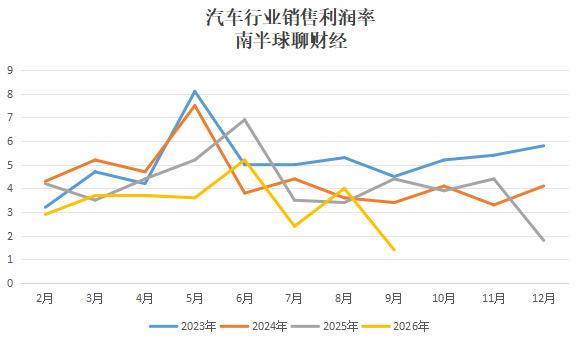
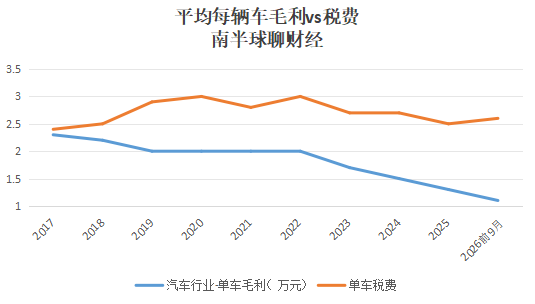
背景与关键数据
- 销售利润率 = 利润总额 ÷ 营业收入。 1.4% 的意思是：车企卖出 10 万元的车，最后只剩 1400 元利润。规模以上工业企业的整体利润率一般在 5%–6%，汽车业已经远低于工业平均。
- 单车毛利：行业毛利总额除以销量，也就是还没扣销售、管理、研发费用之前每辆车赚的钱。9 月只有约 5000 元，扣完这些费用后所剩无几。
- 为什么这么低：一是新能源车价格战持续，各家用降价、"一口价"、"限时补贴"抢份额；二是 2026 年起新能源车购置税从全免改为减半征收，抬高了终端成本，车企往往自己消化；三是出口和高端车型撑不起整体利润。
图片解读
- 图 1《汽车行业销售利润率》（Jason 自制，2023–2026 年分月）：黄线是 2026 年。2–5 月在 3%–4% 之间，6 月冲到约 5.2%（半年末冲量），7 月掉到约 2.4%，8 月回到约 4%，9 月跌到约 1.4%，是四条线里的最低点。同期对比：2023 年 9 月约 4.5%，2024 年约 3.4%，2025 年约 4.4%。往年 9 月通常是"金九银十"旺季的开始，今年旺季反而利润最差。
- 图 2《平均每辆车毛利 vs 税费》（2017 年至 2026 年前 9 月，单位万元）：
- 蓝线（单车毛利）：2017 年约 2.3 万，2019–2022 年稳定在约 2 万，之后一路下滑，2023 年约 1.7 万、2024 年约 1.5 万、2025 年约 1.3 万，2026 年前 9 月约 1.1 万。
- 橙线（单车税费）：2017 年约 2.4 万，2020 年和 2022 年约 3 万，最近几年在 2.5–2.7 万之间，2026 年前 9 月约 2.6 万。
- 两条线的差距越拉越大：2017 年两者几乎持平，现在税费是毛利的 2.4 倍左右。
为什么重要 / 对市场和经济的含义
- "增收不增利"的典型：中国汽车产销量全球第一，出口也很猛，但整个行业几乎不赚钱。这和帖 13 广发的数据呼应：利润集中在能源和"AI+有色"上游，汽车这种中下游制造业利润在下滑。
- 对财政而言汽车仍是"现金牛"：增值税、消费税、购置税加起来，每辆车给政府贡献 2.6 万元左右。车企越卷，税收占车价的比重越显眼，这是 Jason 把两条线放在一起的用意。
- 风险传导：利润率这么低，车企只能压供应商价格、拉长付款周期（帖 13 的应收账款天数在升），零部件企业首当其冲，帖 19 的星宇股份就是例子。
延伸知识
- "内卷式竞争"的经济学：当行业有大量产能、退出成本又高（地方政府不愿企业倒闭、员工安置难），企业宁可亏本卖也不减产，价格一路压到只够覆盖可变成本。正常市场会通过倒闭出清，产能退出后利润才回来；如果出清被阻止，低利润就会拖很久。
- 怎么看车企财报：看"单车净利"和"毛利率"比看销量更能判断真实盈利能力。销量涨、单车利润跌，说明份额是用价格换来的。
帖 2 · 国金：分析师下调全 A 盈利预测，个人和机构的 ETF 操作分道扬镳（美西 10-27 11:49）
卖方分析师在下调 A 股盈利预期；ETF 资金里，个人还在持续买入，机构持有为主的 ETF 年初遭遇巨额赎回后至今没有回来。读全文收起
帖子原文
（要点转述）国金证券搭建了一套高频跟踪体系：看最近一期财报公布后，分析师对当年和明年净利润预测改了多少，并按全 A、宽基、风格、行业分组。分析师预测的变化和主动偏股基金的操作往往同步，可以借此观察机构预期。上周分析师同时下调了全 A 2026 年和 2027 年的净利润预测。从全年看，ETF 操作里机构和个人明显分化。#A股#
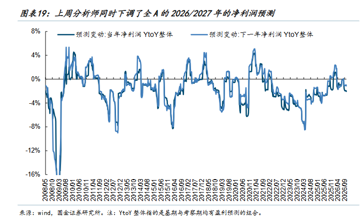
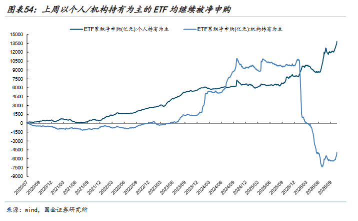
背景与关键数据
- 盈利预测修正（Earnings Revision）：分析师对上市公司未来利润的预测会随财报、行业数据不断调整。整体上调说明基本面在超预期，整体下调说明在不及预期。它是机构选股和判断市场情绪的常用指标。
- "YtoY 整体"：图注说明，这是把基期（今年）和考察期（明年）都有盈利预测的公司放在一起比，保证口径一致。
- ETF（交易型开放式指数基金）：像股票一样在交易所买卖的指数基金。"累计净申购"是从 2020 年 7 月起，投资者净投入了多少钱。
图片解读
- 图 1（2008–2026 年，全 A 净利润预测变动）：深蓝线是当年净利润预测的变动，浅蓝线是下一年的。纵轴是变动幅度（%）。
- 大部分时间曲线在 0 以下，说明分析师习惯先乐观、再慢慢下调。
- 明显的正值只出现在少数盈利上行期：2009–2010 年、2017 年、2020 年底到 2021 年初，以及 2026 年年中（短暂冲到约 +2%）。
- 最新一期两条线都回到约 -1% 到 -2%，也就是年中那波上调已经被收回。
- 图 2（ETF 累计净申购，亿元）：
- 深色线（个人持有为主的 ETF）：从 2020 年起几乎一路向上，2026 年下半年加速，最新约 1.38 万亿元。
- 浅色线（机构持有为主的 ETF）：2023–2024 年大幅上升，2024 年 9 月前后最高约 1.1 万亿元，2025 年保持在约 1 万亿；2025 年底到 2026 年初断崖式下跌，最低约 -7000 亿元，最近回升到约 -5000 亿元。
- 图上没有标注原因。市场普遍把 2024 年的猛增和 2026 年初的猛跌，分别解读为"国家队"（中央汇金等）托市时买入宽基 ETF、年初行情偏热时又赎回降温。
为什么重要 / 对市场和经济的含义
- 盈利预期下调 + 机构撤离：股价长期看盈利，分析师下调意味着基本面支撑在变弱。结合帖 13 的数据（剔除能源和"AI+有色"后，其余工业利润同比下滑一成），A 股的盈利改善很不均衡。
- 个人资金在接力：个人通过 ETF 持续买入，这种资金通常有"越跌越买"的定投特征，能托底，但也可能在市场下行时形成被套的压力。
- "国家队"的角色：如果机构类 ETF 的进出主要是政策性资金，那 A 股的大级别波动在一定程度上受政策节奏主导，单看基本面不够。
延伸知识
- 分析师预测的"乐观偏差"：全球研究都发现，卖方分析师对盈利的初始预测普遍偏高，随后逐步下调。所以"预测在下调"本身不稀奇，关键是看下调的速度和范围是否在扩大。
- 为什么 ETF 是观察资金流的好窗口：ETF 份额每天公布，申购赎回清清楚楚，比主动基金的季报及时得多。
帖 3 · 花旗：AI 资本开支和政府发债一起抢钱，长期利率面临上行压力（美西 10-27 12:44）
全世界的储蓄不够同时喂饱 AI 投资和政府赤字，钱变贵了，长期利率要往上走。读全文收起
帖子原文
（要点转述）花旗澳新投资大会 10 月 20–21 日在悉尼举行，约 600 场企业会议、900 家机构客户参会。宏观主题：全球经济虽屡遭冲击仍有韧性，但正在进入"全球资本供给更紧张"的新阶段，原因是 AI 领域数万亿美元的资本开支和各国大规模发行国债同时发生，长期国债收益率和期限溢价持续承压上行。各国政府转向国家主导的经济安全、战略自主和更大力度的产业补贴，把供应链韧性放在市场效率之上。中国增长预期被下调，亚洲仍依赖发达经济体的需求；中东冲突未解，霍尔木兹海峡、曼德海峡等航运咽喉存在风险。沃什领导的美联储反应函数明显转变：更鹰派、更少沟通、偏好更小的资产负债表。澳洲联储警告通胀前景比 8 月预测"实质性恶化"，企业越来越把 3.0%–3.5% 的通胀当作新常态，央行对进一步加息持开放态度。#金融#
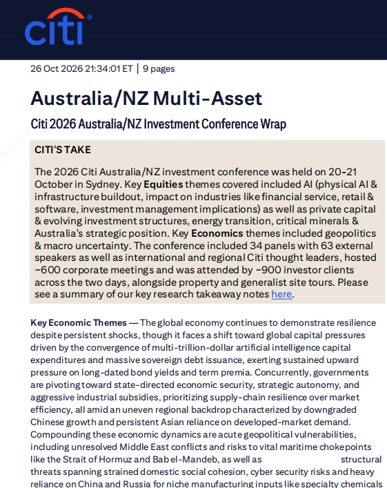
背景与关键数据
- 资本供给压力：可以把全球储蓄想成一个资金池。AI 公司建数据中心要钱，政府填赤字也要钱，两个大买家同时来"借钱"，资金的价格（利率）自然上涨。
- 期限溢价（Term Premium）：投资者持有 10 年期国债，相比每年滚动买 1 年期国债，要求的额外补偿。通胀不确定、财政风险、供给过多都会推高它。
- 反应函数（Reaction Function）：央行面对通胀、就业等数据时"怎么出手"的规律。沃什的美联储：对通胀更敏感（鹰派）、少做前瞻指引、倾向继续缩表。
- 澳洲联储（RBA）：通胀目标是 2%–3%。如果企业把 3%–3.5% 当常态，定价和工资都会往这个方向靠，通胀就会自我实现。
图片解读
- 花旗报告首页（2026-10-26）：会议共 34 场论坛、63 位外部嘉宾。股票主题包括 AI（实体 AI 与基础设施建设，以及对金融、零售、软件、资管的影响）、私募资本、能源转型、关键矿产和澳洲的战略地位；经济主题是地缘政治和宏观不确定性。正文段落和 Jason 的转述一致，另外提到社会凝聚力承压、网络安全风险，以及特种化学品等细分原料严重依赖中国和俄罗斯。
为什么重要 / 对市场和经济的含义
- 对债券：长端利率易上难下，"买长债吃资本利得"的逻辑在变弱。这和帖 26（美国盟友减少买美债）、帖 33（中金测算 10 年期美债可能到 5.3%）是同一条线。
- 对股票：利率高，成长股的估值折现更狠；AI 投资如果回报不及预期，既拖股价，又因为已经借了钱而放大风险。
- "安全 > 效率"：供应链本地化、产业补贴意味着成本更高，长期看通胀中枢可能上移，这也是 RBA 担心通胀"新常态"的背景。
延伸知识
- 可贷资金理论：利率由储蓄（资金供给）和投资加政府借款（资金需求）决定。需求上升而储蓄不变，利率就上升。20 世纪 80 年代美国里根时期大赤字配合高利率，就常被拿来当例子。
- 通胀预期"脱锚"：一旦企业和工人普遍预期通胀会更高，就会提前涨价、要求加薪，央行要用更高的利率才能把预期拉回来。这就是央行宁可"多加一次"也不愿让预期固化的原因（对照帖 25 新西兰央行的争论）。
帖 4 · 摩根大通：中资银行股还能买，国有大行跑赢，股份行有补涨机会（美西 10-27 13:16）
国有大行 H 股相对国债的"股息溢价"已经回到 10 年平均水平（约 2.1 个百分点），不算便宜了；股份行的溢价还在平均之上，所以 JPM 说它们有补涨空间。读全文收起
帖子原文
（要点转述）摩根大通认为，中国银行股已经涨过一轮，但仍看好大型国有银行，部分股份制银行有补涨机会；在避险交易背景下，持续流入的资金会支撑国有银行，预计到 2026 年底国有银行跑赢股份行和大盘。图表是过去 10 年中国银行 H 股股息率与 10 年期国债收益率的差额。Jason 解释：资金买银行股，不一定是相信银行会快速增长，可能只是在找比债券更高的现金回报。比如 10 年期国债 2%、某银行税后股息率 4.1%，股息溢价就是 2.1 个百分点。但有两个风险：股息不是债券票息，可以调整甚至削减；股价会波动，一年拿 5% 股息、股价跌 20%，股息就补不回来。所以不能把高股息银行股简单当作国债替代品。#金融#
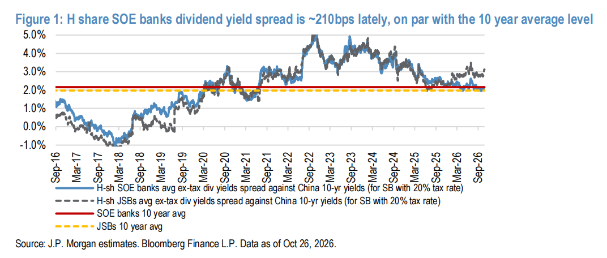
背景与关键数据
- 股息率溢价 = 股息率 − 10 年期国债收益率，可以理解成"买银行股比买国债每年多拿多少现金"。溢价越高，银行股相对越便宜。
- H 股：在香港上市的中国内地公司股票，通常比同一公司的 A 股便宜，股息率更高。
- "税后、20% 税率"：内地个人投资者通过港股通买 H 股，股息要交 20% 的红利税，所以 JPM 用的是扣税后的股息率。
- 国有大行 vs 股份行：工、农、中、建、交、邮储是国有大行；招商、兴业、中信、浦发等是股份制银行。大行规模大、风险低、分红稳；股份行业绩弹性更大，但资产质量更受地产等周期影响。
图片解读
- Figure 1（2016 年 9 月至 2026 年 9 月）：
- 蓝实线：国有大行 H 股平均税后股息率减中国 10 年期国债收益率。
- 灰虚线：股份行 H 股的同一指标。
- 红线：国有大行 10 年平均（约 2.1%）；黄虚线：股份行 10 年平均（约 2.0%）。
- 走势：2017–2018 年溢价一度为负（当时国债收益率高、银行股估值不低）；2020 年后随着国债收益率下行和银行股下跌，溢价一路升到 2022 年 9 月约 5% 的峰值，2023 年仍在 4%–5%；2024 年以后银行股大涨，溢价逐步收窄。现在国有大行约 2.1%，正好在 10 年平均线上；股份行约 3%，明显高于自身平均。
为什么重要 / 对市场和经济的含义
- "红利行情"走到中段：前几年银行股便宜、股息高，是"高股息策略"的核心。现在国有大行溢价回到均值，继续上涨需要国债收益率进一步下降或资金继续涌入。
- 避险资金的去处：帖 23 银行理财扩张、帖 24 伍戈谈红利资产，和这里一样，都在说低利率、风险偏好下降时，资金在找"稳定现金流"。
- Jason 的提醒：分红不是承诺。银行的分红能力取决于利润，而息差（贷款利率减存款利率）在持续收窄，地产和城投风险还没出清（帖 18、20）。
延伸知识
- 股息贴现模型（DDM）：股票价格 ≈ 下一年股息 ÷（要求回报率 − 股息增长率）。国债利率下降会拉低要求回报率，银行股估值就上升，这是"利率下行、红利股走强"的数学原因。
- "类债券股票"的陷阱：2008 年前不少欧美投资者把银行股当高息稳健资产，危机中很多银行被迫停止分红、股价腰斩。高股息只有在利润稳定时才可靠。
帖 5 · 摩根士丹利：新房销售继续恶化，二手房增长也在减速（美西 10-27 13:27）
50 个城市每周新房成交只有约 2 万套，不到 2019–2021 年的三分之一；二手房靠"以价换量"维持成交，也开始降温。读全文收起
帖子原文
（要点转述）大摩：中国新房销售继续恶化；二手房成交仍保持同比正增长，但势头在减弱。中原地产六城二手房挂牌价追踪指数为 14.4%（前一周 14.6%），一线城市中介指数为 50.8（前一周 54.0）。#房价#
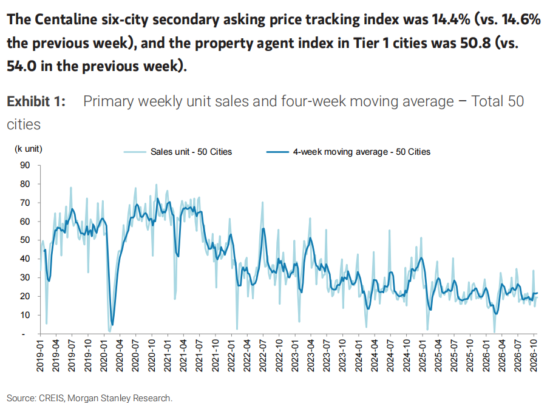
背景与关键数据
- 中原挂牌价追踪指数：按帖 12 的图注，中原的这类指数表示"上调挂牌价的房源比例"。14.4% 就是只有约 14% 的房源在涨价，其余都在持平或降价。
- 中介指数：中原对一线城市中介经纪人的调查，类似 PMI，50 是荣枯线。从 54.0 掉到 50.8，说明中介对市场的感受在变差，接近"不好不坏"的分界。
- 新房 vs 二手房：新房销售依赖开发商、受烂尾担忧影响大；二手房是"现房"，没有交付风险，所以这几年二手房份额上升。
图片解读
- Exhibit 1（2019–2026 年，50 城新房周销售套数，千套）：浅蓝是每周数，深蓝是 4 周移动平均。
- 2019 年到 2021 年中，4 周均值大多在 55–70 千套；2020 年初疫情时暴跌到个位数后迅速反弹。
- 2021 年下半年（恒大危机）开始下台阶，2022 年约 30–40 千套，2023 年约 25–40 千套，2024 年后基本在 15–30 千套之间，春节前后会探到 10 千套左右。
- 最新 4 周均值约 21 千套，比 2019–2021 年的平均水平少了约三分之二。
为什么重要 / 对市场和经济的含义
- 新房销售 = 开发商的现金流 = 地方政府的土地收入：新房卖不动，开发商不拿地，土地出让收入下降，城投和地方财政的压力就会上升（帖 18、20）。
- 二手房"量增价跌"：二手成交正增长，是业主降价换来的（帖 12、17 的挂牌价一直在跌）。成交多不等于市场好转。
延伸知识
- 4 周移动平均的作用：周数据受节假日、开盘节奏影响很大，取 4 周平均可以过滤噪音，看清趋势。读高频数据时要养成看平滑线的习惯。
- 房地产周期的"量在价先"：成交量通常领先价格。量持续萎缩，价格还会继续往下；量先企稳回升几个季度后，价格才可能见底。
帖 6 · 摩根大通：9 月工业利润 +14.4%，但集中在上游和 AI 电子（美西 10-27 13:40）
工业利润增速看着很亮眼，但这主要是油价、有色金属涨价和 AI 硬件拉动的，下游企业的利润没有改善，账款反而越压越多。读全文收起
帖子原文
（要点转述）JPM：9 月中国规模以上工业企业利润同比增长 14.4%。上游采矿、原材料和 AI 相关电子制造业利润高速增长，汽车、建材、传统消费品制造和公用事业利润仍然疲弱。9 月应收账款同比增长 10%，高于营业收入的累计增速。两张历史图表把工业利润和 PPI 放在一起比较。Jason 补充：考虑到 PPI 向 CPI 传导不畅，利润可能集中在上游个别行业。#经济数据#
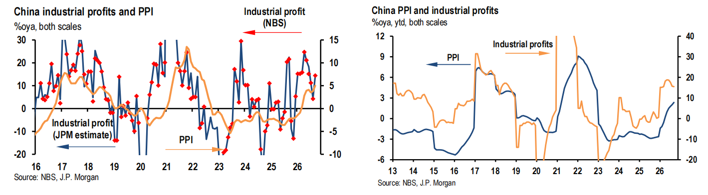
背景与关键数据
- PPI（工业生产者出厂价格指数）：工厂卖出产品的价格。PPI 上升，上游企业（采矿、冶炼、化工）利润最先受益。
- CPI（居民消费价格指数）：老百姓买东西的价格。如果 PPI 涨而 CPI 不涨，说明中下游企业没法把成本转嫁给消费者，只能自己吃掉，利润被挤压。这就是"PPI-CPI 剪刀差"或"传导不畅"。
- 应收账款增速 > 收入增速：卖出去的货越来越多是赊账，钱没收回来。这通常说明下游客户付款能力变弱，或者企业在用赊销抢订单。
图片解读
- 左图（2016–2026 年，工业利润与 PPI，均为同比）：红点是统计局公布的工业利润同比，蓝线是 JPM 的估算，橙线是 PPI。三者大体同步：2017 年、2021 年 PPI 冲高时利润大增；2019 年、2023 年 PPI 为负时利润下滑。2026 年 PPI 回升，利润同比也回到两位数。
- 右图（2013–2026 年，PPI 与工业利润累计同比）：蓝线 PPI（左轴）在 2023–2025 年长期为负（约 -2% 到 -3%），2026 年明显回升转正，最新约 +2%；橙线利润累计同比（右轴）约 +15%。上一轮 PPI 由负转正是 2016–2017 年（供给侧改革）和 2021 年（大宗商品暴涨），利润都跟着暴涨。
为什么重要 / 对市场和经济的含义
- "上游吃肉、下游喝汤"：这一轮 PPI 回正主要来自伊朗战争推高油价和有色金属涨价（帖 13 的"能源和石化""AI+有色"），不是需求旺盛。对下游的汽车（帖 1）、建材、消费品来说，这是成本冲击。
- 看总量会被误导：总量 +14.4% 很好看，剔除两条强势链后其余行业是下滑的（帖 13）。就业大头在中下游，所以"利润增长"和"老百姓体感"可能完全不同。
- 应收账款预警：账期拉长意味着产业链的现金压力在上升，中小企业首当其冲（帖 13 第二张图）。
延伸知识
- 成本推动型 vs 需求拉动型 PPI 上涨：需求拉动时上下游都能涨价，利润普涨；成本推动（如油价冲击）时只有上游受益，下游被挤压，经济整体可能反而更弱。判断方法是看 CPI 和下游产品价格有没有跟上。
- 2021 年的类比：当时 PPI 一度达到 13.5%，CPI 只有 1% 左右，中下游企业利润被挤压，政府出台了一系列保供稳价措施。
帖 7 · 花旗：中国的"年轻老人"是银发经济的主力（美西 10-27 13:59）
中国每年新增约 1000 万 60 岁以上老人，最大的一批"50 后""60 后"正在跨进老年，他们比上一代更有钱、更愿意花钱，但也更难靠子女照顾。读全文收起
帖子原文
（要点转述）花旗：中国正快速进入深度老龄化，同时家庭规模不断缩小。2021 年约 60% 的 60 岁以上人群独居或只与配偶同住，家庭独立承担养老照护的能力在减弱，养老服务越来越需要社区、医疗机构、专业服务商、保险公司和地方政府共同参与。新一代退休人群的消费习惯和传统老年人明显不同。"年轻老人"主要指 50–64 岁人群，他们经历了高增长、收入提高和房产升值，部分人退休时积累了可观财富，更愿意为健康、体验、社交和兴趣付费，会成为银发经济的重要推动力。#人口#
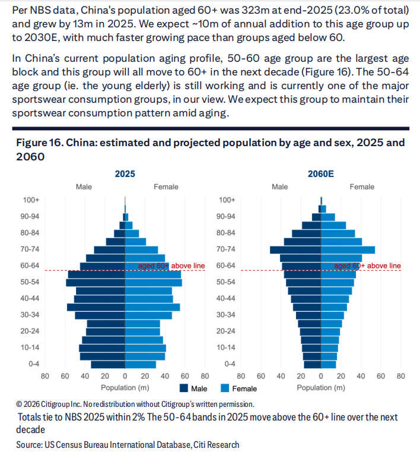
背景与关键数据
- 统计局数据：2025 年末 60 岁以上人口 3.23 亿，占总人口 23.0%，2025 年一年增加 1300 万。花旗预计到 2030 年每年新增约 1000 万。
- 人口学的"老龄化社会"标准：60 岁以上占比超过 10%（或 65 岁以上超过 7%）算进入老龄化，65 岁以上超过 14% 算深度老龄化，超过 20% 算超老龄化。中国 65 岁以上已超过 14%。
- 空巢化：独居或只与配偶同住的老人占约 60%，传统的"多子女轮流养老"正在消失。
图片解读
- Figure 16（中国人口金字塔，2025 年 vs 2060 年预测）：横轴是人口（百万），左边男性、右边女性，纵轴是 5 岁一档的年龄组。红色虚线是 60 岁分界线。
- 2025 年：形状像"中间粗的纺锤"，最宽的是 50–54 岁和 55–59 岁两档（每档男女各约 5500–6000 万），就在 60 岁线下方；0–4 岁一档明显变窄（出生人口下降）。
- 2060 年预测：变成"上宽下窄的倒金字塔"，最宽的是 70–74 岁，60 岁以上各档都很宽，年轻人口各档普遍只有 1500–2000 万。
- 图注：2025 年 50–64 岁的人口会在未来十年全部越过 60 岁线。
为什么重要 / 对市场和经济的含义
- 消费结构变化：花旗原文提到，50–64 岁人群仍在工作，是运动服饰的主要消费群体之一。健康、旅游、文娱、养老社区、康复医疗都可能受益。
- 但财富分布不均：Jason 此前也关注过养老金替代率问题，不同群体的养老金差距很大（机关事业单位、企业职工、城乡居民三档）。"有钱的年轻老人"主要是城市中产，农村老人每月只有一两百元基础养老金。
- 财政压力：老年人口每年增加 1000 万，养老金、医保支出刚性上升，和帖 32（社保补缴追溯）联系在一起看。
延伸知识
- 生命周期假说（莫迪利安尼）：人在工作时储蓄、退休后消耗储蓄。老龄化社会里，储蓄率理论上会下降、消费率上升。但如果养老保障不足，老人会因为担心未来而继续储蓄，这在中国和日本都很明显。
- 日本的银发经济经验：日本 65 岁以上占比约 29%，老年人持有日本家庭金融资产的六成以上。但日本的经验也显示，银发消费能撑起一些行业，撑不起整体经济增长。
帖 8 · 高盛：同样一笔需求，投到高科技创造的岗位和工资都更少（美西 10-27 14:10）
高科技产业贡献了大量工业产出，却只吸纳了一小部分就业、发出去的工资也少，所以"新质生产力"拉动 GDP，不等于能拉动老百姓的收入和消费。读全文收起
帖子原文
（要点转述）高盛用投入产出模型发现，同样规模的最终需求投向不同行业，创造的国内增加值、劳动报酬和就业差别很大。每 100 万元高科技最终需求约支持 3 个岗位，房地产和服务业分别约 4.6 个和 4.4 个；每 100 元最终需求创造的劳动报酬，高科技为 33 元、服务业为 46 元。高科技需求主要来自投资和出口，而非居民消费。GDP 增长贡献和居民实际福利不等价：GDP 衡量生产活动的增加值，居民福利还取决于工资、物价、公共服务、生活质量和财富分配，所以高科技占 GDP 比重上升，不代表生活质量同比例改善。#经济数据#
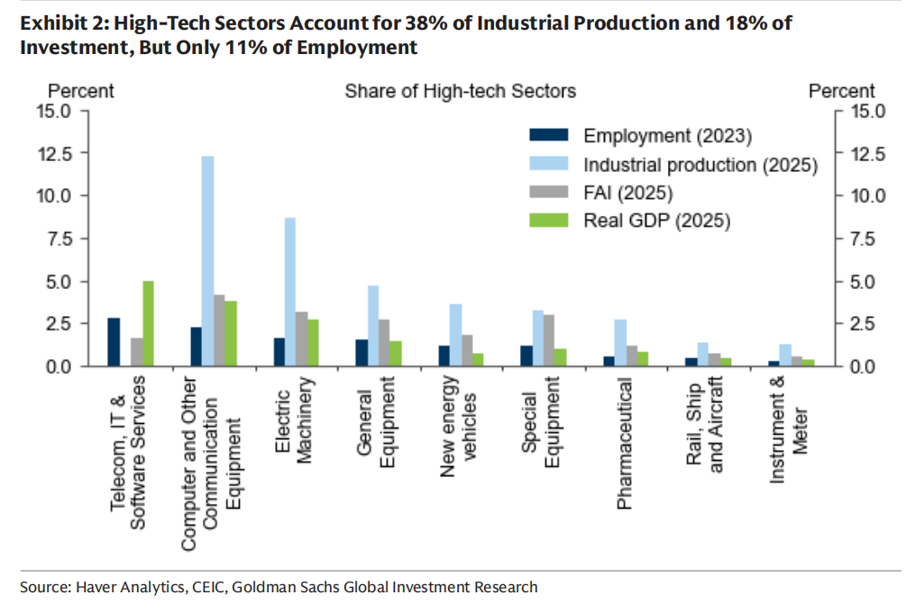
背景与关键数据
- 投入产出模型（列昂惕夫模型）：把整个经济看成一张大表，记录每个行业从其他行业买多少原料、卖给谁多少产品。它可以算出"最终需求增加 1 元，会在整个产业链上带出多少产出、工资和岗位"。
- 最终需求：消费、投资、出口这些"最终用途"，不包括中间环节。
- 劳动报酬占比：100 元需求里有多少变成了工资。高科技 33 元，服务业 46 元，差了约四成。高科技的钱更多变成了设备折旧、利润和进口零部件。
图片解读
- Exhibit 2（高科技各子行业在全国就业、工业产出、投资和 GDP 中的占比，%）：四种颜色的柱子分别是就业（2023，深蓝）、工业产出（2025，浅蓝）、固定资产投资（2025，灰）、实际 GDP（2025，绿）。标题：高科技合计占工业产出 38%、投资 18%，就业只占 11%。
- 计算机和通信设备：工业产出占比约 12.3%，投资约 4.2%，GDP 约 3.8%，就业只有约 2.3%。
- 电气机械：产出约 8.7%，就业约 1.7%。
- 电信、IT 和软件服务：GDP 约 5.0%，就业约 2.8%（它不是制造业，所以没有工业产出柱）。
- 通用设备、新能源车、专用设备、医药、轨交船舶飞机、仪器仪表依次减小，每个行业的就业占比都在 0.3%–1.6%。
- 规律很一致：浅蓝柱（产出）远高于深蓝柱（就业）。
为什么重要 / 对市场和经济的含义
- 解释"GDP 和体感的温差"：中国这几年产业升级很快，但就业和收入的增长没有跟上。房地产曾经是"每 100 万元带 4.6 个岗位"的就业大户，地产收缩，丢掉的岗位很难被高科技补上。
- 需求来源错位：高科技的需求主要来自投资和出口，不是国内消费。这让中国经济更依赖海外市场，容易遭遇贸易摩擦（参考帖 29 泰国拟对进口电动车加税、此前欧盟拟动用的保障措施）。
- 政策含义：要提振消费，光靠发展高科技不够，需要提高劳动报酬在收入分配中的占比、加大服务业和公共服务投入。
延伸知识
- "资本深化"与就业：越先进的产业，单位产出用的机器越多、用的人越少（资本密集）。这在全球都一样，美国科技巨头的市值和员工人数之比也远高于传统行业。
- 鲍莫尔成本病：生产率提升快的行业（制造业、科技）用工越来越少，劳动力流向生产率难提升的服务业（医疗、教育、餐饮）。经济越发达，服务业的就业占比越高，这是正常规律。
帖 9 · 美银：投资者躲进防御板块，把"安全资产"也推向了泡沫区（美西 10-27 14:39）
资金从 AI 科技股撤到医疗、必选消费，这些"防御股"被挤得太满，美银的泡沫指标显示医疗板块已经越过警戒线。读全文收起
帖子原文
（要点转述）美银：通常科技股下跌时，投资者会转向医疗、食品饮料、日用品等防御板块，但这种避险行为本身可能制造新风险。目前医疗保健和日常消费品板块的泡沫风险指标（BRI）处于全球较高水平，接近泡沫区间：为了回避风险而集中买入低风险资产，反而把它们买成了高风险资产。当前泡沫还没到 2000 年互联网泡沫的程度，极端价格行为仍较局部，只有 2.2% 的标普 500 市值处于 BRI 高于 0.8 的状态。近期市场强化了三个观察：AI 下跌、利率下降；纳斯达克与标普 500 的波动率差距再次扩大；在类泡沫市场里，防御板块也可能出现泡沫。#美股#
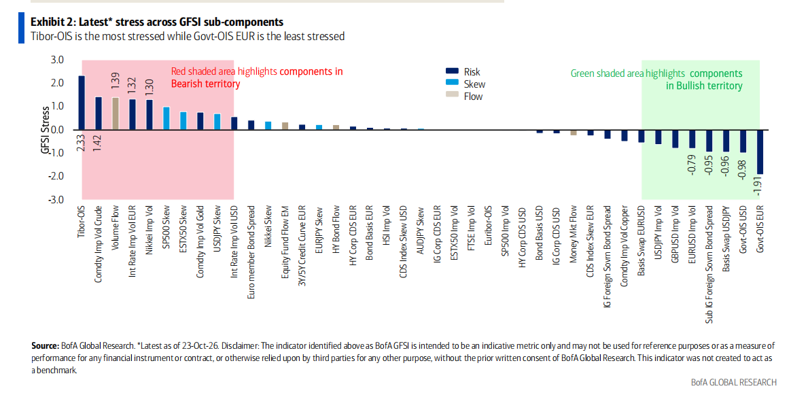
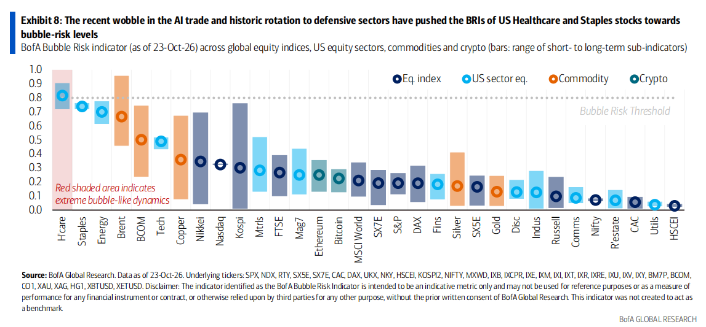
背景与关键数据
- 防御性板块：经济好坏对需求影响不大的行业，比如医药、食品、日用品、公用事业。人总要看病吃饭，所以它们的盈利相对稳定。
- BRI（美银泡沫风险指标）：衡量价格上涨是否在"加速"、是否脱离正常波动范围，0 到 1 之间，超过 0.8 视为泡沫风险区。它看的是价格行为，不是估值。
- GFSI（美银全球金融压力指标）：综合了利率、波动率、信用利差、资金流等几十个子项，正值表示压力偏大（偏空），负值表示宽松（偏多）。
图片解读
- 图 1（GFSI 各子项最新压力值，截至 10 月 23 日）：
- 红色区域（压力最大、偏空）：Tibor-OIS 2.33（日元银行间拆借利率与无风险利率之差，反映日本银行间资金紧张），原油隐含波动率 1.42，成交量资金流 1.39，欧元利率隐含波动率 1.32，日经隐含波动率 1.30，然后是标普 500 偏度、欧洲斯托克 50 偏度、黄金隐含波动率、美元兑日元偏度等。
- 绿色区域（最宽松、偏多）：欧元区国债-OIS -1.91、美元国债-OIS -0.98、美元兑日元基差掉期 -0.96、次投资级主权债利差 -0.95 等。
- 含义：压力集中在日本资金市场、原油波动和股指尾部风险上，信用和主权债利差还算平稳。
- 图 2（BRI，截至 10 月 23 日，点是当前值，柱是短期到长期子指标的区间）：
- 医疗保健约 0.82，越过 0.8 的泡沫线（红色阴影）；必选消费约 0.74、能源约 0.70、布伦特原油约 0.67 紧随其后。
- 彭博商品指数约 0.5，科技约 0.49，铜约 0.36，日经约 0.35，纳斯达克约 0.32，韩国 KOSPI 约 0.30。
- 标普 500、Mag7、比特币、黄金都在 0.1–0.25 之间，恒生国企指数几乎为 0。
- 一个反直觉的画面：最"安全"的医疗和必选消费，泡沫指标反而比科技和纳斯达克高。
为什么重要 / 对市场和经济的含义
- "拥挤交易"的风险：当所有人都躲进同一个避风港，避风港本身的价格就被推高，一旦风向变（比如 AI 情绪修复），资金回流科技，防御股可能大跌。
- 能源和原油的高读数：反映伊朗战争带来的油价暴涨（帖 15、30），属于事件驱动，冲突缓和时回撤会很快。
- "AI 跌、利率降"：AI 股票下跌引发避险，资金买债，利率下行。这和帖 28 提到的"市场对 AI 投资热潮的信心动摇，促使部分投资者寻找避险资产"一致。
延伸知识
- 板块轮动（Sector Rotation）：经典的美林时钟认为，经济从扩张走向放缓时，资金从周期股、科技股转向防御股。但如果大家都按同一张图操作，轮动本身就会制造拥挤。
- 为什么日元资金市场重要：日本是全球最大的债权国之一，日元低息资金是全球套息交易的来源。日本银行间利差紧张，往往预示套息交易平仓压力，2024 年 8 月日元套息平仓就曾引发全球股市单日暴跌。
帖 10 · 摩根大通：资产荒下，中国家庭前 9 个月买的金子已超过去年全年（美西 10-27 15:03）
金价跌了，中国人反而买得更多，这既是"抄底"心态，也说明居民能放心投的资产越来越少。读全文收起
帖子原文
（要点转述）JPM：在资产荒和风险资产吸引力减弱的背景下，中国家庭最近几个月购买黄金的兴趣明显上升。大型银行业务人员表示，今年前 9 个月通过黄金积存计划及类似产品完成的黄金购买量，已经超过 2025 年全年。#金融#
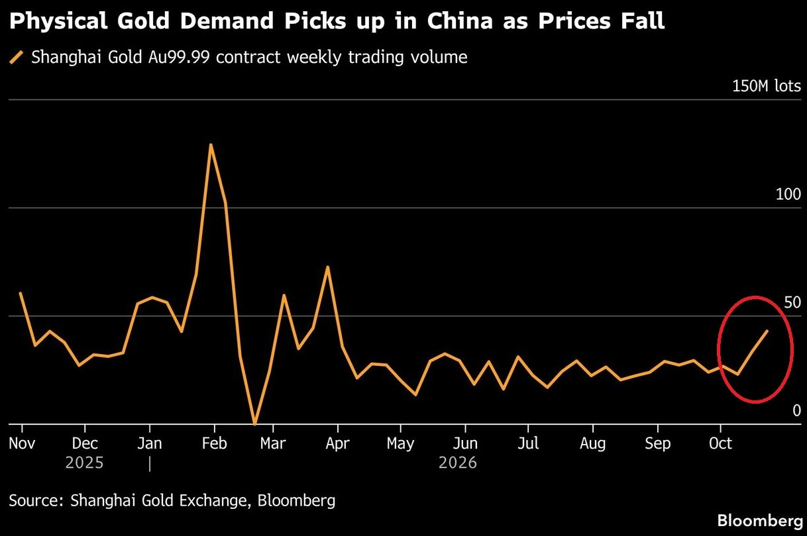
背景与关键数据
- 资产荒：手里有钱，却找不到收益合适、风险可控的投资品。存款利率很低、房子在跌、股市波动大，这时候黄金、理财（帖 23）、高股息股（帖 4、24）就成了替代选择。
- 黄金积存计划（积存金）：银行推出的"按克买金"产品，可以每天或每月定投小额资金，积累到一定克数后可兑换实物金条或卖出。门槛低、手续简单，很受年轻人欢迎。
- 金价背景：据前一天的帖子，国际金价近期跌破每盎司 4000 美元，美联储加息压制了不生息的黄金。
图片解读
- 彭博图《金价下跌，中国实物黄金需求回升》：上海黄金交易所 Au99.99 合约的每周成交量（2025 年 11 月至 2026 年 10 月）。
- 2026 年 1 月底到 2 月初出现一个巨大峰值（约 1.27 亿手，接近纵轴 1.5 亿上限），对应年初金价暴涨时的抢购潮。
- 2 月下旬一度跌到接近 0（春节长假休市），3–4 月有两次小反弹（约 5800 万和 7100 万）。
- 5–9 月比较平淡，基本在 1500 万到 3000 万之间。
- 10 月明显抬头（红圈），最新一周约 4300 万，是半年来的高点。
为什么重要 / 对市场和经济的含义
- 中国是全球最大的黄金消费国之一，中国居民和央行的买盘是金价的重要支撑。金价下跌时有国内买盘接住，能限制金价的下跌空间。
- 折射出居民的避险心态：一边是房价、理财收益下滑，一边是对未来的不确定。买黄金本质上是在"不相信其他资产"。
- 和美国的对照：帖 33 中金把黄金比作"看涨期权"，最大的风险是美联储连续大幅加息。只要加息节奏可控，逢低买金在策略上有一定道理，但需要承受时间成本。
延伸知识
- 黄金为什么和实际利率负相关：黄金不产生利息。实际利率（名义利率减通胀）越高，持有黄金的机会成本越大，金价越承压。2022 年美联储激进加息时金价就一度下跌。
- "价格下跌、需求上升"：对投资品来说，价格下跌后需求上升属于"抄底行为"。经济学里有一类"凡勃伦商品"是价格越高越想买，黄金在中国居民眼中兼具投资品和保值品属性，涨时追、跌时抄的行为都有。
帖 11 · 摩根大通：泡泡玛特三季度收入近乎腰斩，海外跌约七成（美西 10-27 15:19）
Labubu 热潮退去，泡泡玛特三季度收入同比跌了近一半，海外跌约七成；这类"情绪消费"公司最大的风险是爆款不可复制，而成本却是固定的。读全文收起
帖子原文
（要点转述）JPM：泡泡玛特的问题已经从"增长放缓"变成"收入明显下降、利润率承压"，市场可能仍高估了它未来两年的盈利。真正的问题是海外收入暴跌：过去海外增速远高于国内，是吸引资本市场的核心故事，但 2026 年发生了明显逆转。Jason 分析了潮玩的商业模式：消费者买的不只是物理使用价值，还有情感价值、身份表达、社交认同、收藏乐趣和稀缺感。需求分两类：相对稳定的收藏和情感消费，以及热度驱动的阶段性消费，两者对估值的意义完全不同。日用品买很多次还要买，新奇和收藏类商品的购买欲望则对新鲜感很敏感：第一次是好奇，第二次是收藏，第三四次可能是为了集齐，之后若没有新设计、新叙事、新玩法，边际满足就会下降。企业只能不断推新 IP、新系列、新联名维持购买频率。不过收藏行为也有互补性，接近集齐一套时购买意愿反而可能增强，所以不能简单认定边际效用按固定速度递减。潮玩企业要持续创造消费理由，产品设计、IP 运营和营销会一直是重要成本，一次超级 IP 的成功不能保证下一次。爆款热度过去，成本却留下，利润就可能比收入跌得更快。#经济数据#
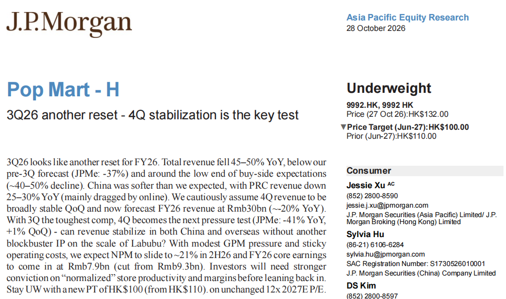
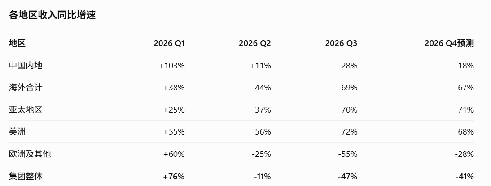
背景与关键数据
- 泡泡玛特（9992.HK）：以盲盒和潮玩 IP 起家，2025 年靠 Labubu 全球爆红，股价和业绩暴涨，海外收入一度是增长引擎。
- JPM 评级"低配"（Underweight）：认为股价会跑输大盘。目标价从 110 港元下调到 100 港元，10 月 27 日股价 132 港元，隐含约 24% 下跌空间。估值按 2027 年预测市盈率 12 倍。
- 关键数字（报告首页）：
- 三季度总收入同比 -45% 到 -50%，低于 JPM 原先 -37% 的预测，在买方预期（-40% 到 -50%）的下沿。
- 中国内地收入同比 -25% 到 -30%，主要被线上拖累。
- 预计四季度收入环比大致持平，同比约 -41%；全年收入约 300 亿元（同比约 -20%）。
- 下半年净利率预计降到约 21%，2026 年核心利润预测从 93 亿元下调到 79 亿元。
图片解读
- 图 1：JPM 报告首页（2026-10-28，"三季度又一次下修，四季度企稳是关键考验"）。核心问题：没有另一个 Labubu 级别的爆款 IP，中国和海外的收入能否企稳？毛利率小幅承压、经营费用刚性，投资者需要对"正常化"的单店效率和利润率更有信心才会回来。
- 图 2：各地区收入同比增速表：
- 中国内地：一季度 +103%、二季度 +11%、三季度 -28%、四季度预测 -18%。
- 海外合计：+38%、-44%、-69%、-67%。其中亚太 +25%、-37%、-70%、-71%；美洲 +55%、-56%、-72%、-68%；欧洲及其他 +60%、-25%、-55%、-28%。
- 集团整体：+76%、-11%、-47%、-41%。
- 可以看到断崖从二季度就开始，海外比国内跌得更狠，美洲和亚太最惨。
为什么重要 / 对市场和经济的含义
- "热度经济"的估值陷阱：市场在爆款高峰期往往把一次性的爆发当作可持续增长来估值。热度过去后，收入回落，市场还要重新评估"正常年份"能赚多少。
- 经营杠杆的反噬：门店租金、员工、IP 设计和营销是相对固定的成本。收入涨时利润涨得更快，收入跌时利润也跌得更快，这就是 Jason 说的"利润可能比收入下降得更快"。
- 对中国消费出海的启示：海外市场的爆发不等于品牌已经扎根。泡泡玛特的海外收入跌得比国内还猛，说明海外需求更多是"跟风"。
延伸知识
- 边际效用递减：同一种东西消费得越多，每多一件带来的满足感越少。第一杯水最解渴，第五杯就无所谓了。Jason 的补充很重要：收藏品有"互补性"，差最后一个就能集齐一整套时，最后那一个的价值反而最高，所以盲盒才会设计"隐藏款"。
- 时尚和玩具行业的历史：90 年代美国的 Beanie Babies（豆豆娃）曾经疯狂炒作，几年后崩盘；中国十几年前的"小浣熊干脆面卡片"也是一样。能长期成功的公司（如迪士尼、三丽鸥）靠的是持续经营 IP 的能力，而不是某一个爆款。
帖 12 · 摩根大通：一线城市二手房挂牌价继续阴跌（美西 10-27 15:31）
一线城市二手房挂牌价不再暴跌，但每周每月都在小幅下跌，愿意涨价的房东比例跌到了今年最低。读全文收起
帖子原文
（要点转述）JPM：冰山（Iceberg）一线城市挂牌均价指数环比下降 0.1%。#房价#
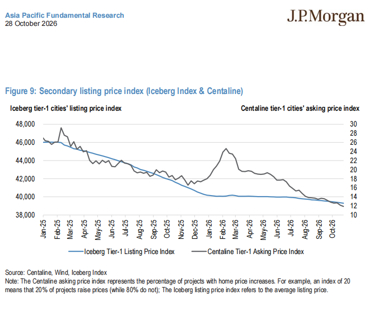
背景与关键数据
- 冰山指数：第三方机构统计的一线城市二手房平均挂牌价（元/平方米左右的量级）。
- 中原挂牌价指数：图注明确说明，它表示上调挂牌价的房源比例。指数 20 就是 20% 的项目在涨价、80% 没涨。
- 挂牌价 vs 成交价：挂牌价是房东的"要价"，实际成交价通常更低，而且挂牌价调整往往滞后，所以挂牌价下跌说明市场还在找底。
图片解读
- Figure 9（2025 年 1 月至 2026 年 10 月）：
- 蓝线（冰山一线城市挂牌价指数，左轴）：从 2025 年初的约 46,000 一路下滑到 2025 年底的约 40,000；2026 年跌速明显放缓，到 10 月约 39,300。从起点算累计跌约 15%，2026 年以来只跌了约 2%，属于"阴跌"。
- 灰线（中原一线城市挂牌价指数，右轴）：2025 年 2 月约 29（近三成房源在涨价），之后逐步下滑；2026 年 2 月出现一波反弹，冲到约 25（春节后"小阳春"），3 月后迅速回落；10 月跌到约 12，是两年来的最低，即只有约八分之一的房源在涨价。
为什么重要 / 对市场和经济的含义
- "小阳春"没有延续：2026 年初的反弹很短，之后涨价房源比例持续下降，说明买方仍有议价优势。
- 跌速放缓≠见底：帖 17 的城市数据显示，部分城市（广州、武汉、西安）今年仍跌了 10% 以上，一线城市整体在慢慢磨底。
- 影响居民财富：房产占中国居民财富的六成以上，挂牌价持续下降压制财富效应，消费意愿也跟着变弱（帖 22 奢侈品消费疲软）。
延伸知识
- "扩散指数"的读法：中原指数是一种"扩散指数"，它不看涨了多少，只看多少比例在涨。扩散指数下降往往先于价格指数下降，是领先信号。PMI 也是类似的原理。
- "阴跌"的心理：急跌会让人恐慌，但也会让人觉得"跌到底了可以买"；慢慢阴跌最消磨信心，买方会持续观望，因为"明天可能更便宜"。
帖 13 · 广发：剔除能源和"AI+有色"，其余工业利润同比下降一成（美西 10-27 16:06）
中国工业利润是"K 型"的：两条链利润翻倍，其余大多数行业在下滑，企业收款周期也创了新高。读全文收起
帖子原文
（要点转述）广发：今年前三季度，"能源和石化""AI+有色"两条链的利润同比分别增长 47.4% 和 92.5%；剔除这两部分（9 个细分行业）后，其余工业行业利润合计同比下降 10.3%。9 月单月延续这一格局，"其他行业"利润同比下降 13.5%。#经济数据#
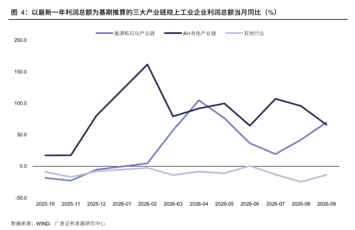
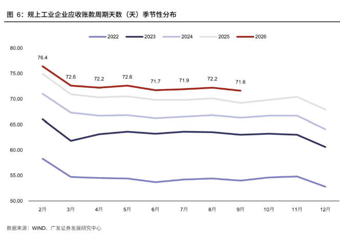
背景与关键数据
- 规上工业企业：年主营收入 2000 万元以上的工业企业，是统计局工业数据的口径。
- 三大产业链：
- 能源和石化：受益于 2026 年伊朗战争带来的油价暴涨。
- AI+有色：AI 服务器、电子元件，以及铜、铝、稀有金属等有色金属，受益于全球 AI 投资热潮和金属涨价。
- 其他行业：包括汽车、机械、纺织、食品、建材等，占工业就业的绝大部分。
- 应收账款周期：从卖货到收回钱的平均天数，越长说明企业被下游占用的资金越多。
图片解读
- 图 4（以最近一年利润为基期推算的三大产业链利润当月同比，2025 年 10 月至 2026 年 9 月）：
- AI+有色（深色）：2025 年 10–11 月约 +17%，12 月跳到约 +80%，2026 年 2 月约 +160% 的峰值，之后在 +65% 到 +107% 之间波动，9 月约 +65%。
- 能源和石化（中紫色）：2025 年底还是负增长（约 -20%），2026 年 3 月起随油价暴涨冲到 4 月约 +105%，之后回落再回升，9 月约 +70%。
- 其他行业（浅色）：12 个月全部在 0 以下，大多在 -8% 到 -25% 之间，9 月约 -14%。
- 图 6（规上工业企业应收账款周期，天，按月份对比 2022–2026 年）：
- 2026 年（红线）：2 月 76.4 天，3 月 72.6，4 月 72.2，5 月 72.6，6 月 71.7，7 月 71.9，8 月 72.2，9 月 71.6 天。
- 往年同期 9 月：2025 年约 69 天，2024 年约 66 天，2023 年约 63 天，2022 年约 54 天。
- 每一年都比上一年更长，四年里拉长了约 18 天。
为什么重要 / 对市场和经济的含义
- 总量数据掩盖了结构：帖 6 的"工业利润 +14.4%"几乎全部来自两条链，而这两条链主要受外部因素驱动（战争、全球 AI 投资），不是国内需求改善。
- 下游被双重挤压：上游涨价抬高成本，下游需求又弱，涨价转嫁不出去，同时收款越来越慢。这就是帖 1 汽车业利润率跌到 1.4% 的大背景。
- 应收账款是"隐性债务"：账期拉长意味着大企业、国企、政府项目在占用中小企业的资金。中小企业是就业主力，它们的现金流紧张会直接影响就业和工资。
延伸知识
- K 型复苏：经济中一部分行业或人群快速上升（K 的上半笔），另一部分持续下滑（下半笔）。总量指标是两者的平均，看起来"还行"，但大多数人的体感是"不行"。
- 三角债：企业之间相互拖欠货款形成的连环债务。90 年代初中国曾大规模清理"三角债"。应收账款周期持续拉长，就是三角债在积累的信号。
帖 14 · 彭博：荷兰拟用 AI 裁掉约 15% 的公务员（美西 10-27 17:29）
荷兰想用 AI 替代 2.5 万名公务员来省钱，这是政府首次把 AI 当作大规模财政减支工具，但能否落地还很难说。读全文收起
帖子原文
（要点转述）彭博：荷兰政府周一表示，将推动一项由 AI 驱动的行政效率改革，计划削减约 15% 的公务员岗位，从 2035 年起每年节省 35 亿欧元（约 39 亿美元）财政支出。这可能是迄今各国政府用技术手段压缩公共部门薪酬开支的最大胆计划。2022 年 ChatGPT 推出以来，私营企业已宣布多轮 AI 裁员，政府部门进展明显滞后。OECD 2025 年 9 月的报告称政府的 AI 应用"落后于私营部门"，项目"往往仍停留在试点阶段"；引入 AI 后工作量有时不降反增，还有大量任务管理者不愿交给 AI。#TAX#
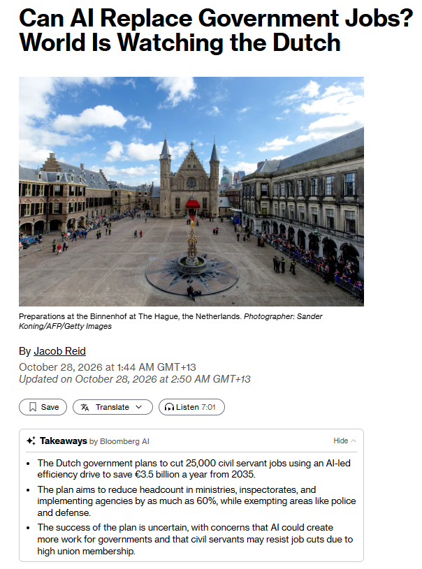
背景与关键数据
- 彭博 AI 摘要（图中）：
- 计划用 AI 驱动的效率改革削减 2.5 万个公务员岗位，从 2035 年起每年节省 35 亿欧元。
- 部委、监察机构和执行机构的人员最多削减 60%，警察、国防等领域豁免。
- 不确定性：AI 可能反而给政府带来更多工作，公务员工会会员率高，可能抵制裁员。
- Jason 打的标签是 #TAX#：他通常用这个标签讨论财政收支。公务员薪酬是政府最大的刚性支出之一。
图片解读
- 彭博文章截图：标题"AI 能取代政府岗位吗？全世界都在看荷兰"，配图是海牙议会所在地 Binnenhof 广场。下方是三条 AI 摘要要点，内容见上。
为什么重要 / 对市场和经济的含义
- 财政整顿的新工具：欧洲各国面临老龄化、国防开支上升和债务压力，砍公务员薪酬是最难的减支方式之一。如果 AI 能替代重复性行政工作，政府就多了一个"不加税、不砍福利"的减支选项。
- 对就业的含义：行政文员、审核、档案处理是 AI 最容易替代的岗位。此前的帖子提到呼叫中心就业在萎缩，现在轮到公共部门。
- 对中国的参照：中国财政供养人员规模庞大，地方财政紧张（帖 18、20 城投依赖补贴）。Jason 关注这条新闻，可能是在暗示：财政压力下，政府"瘦身"迟早会被提上议程。
延伸知识
- 生产率悖论（索洛悖论）：经济学家索洛 1987 年说过："计算机无处不在，唯独在生产率统计里看不到。"新技术要和组织流程一起改造才能提升效率，否则可能只是"多一层工作"。OECD 说政府引入 AI 后工作量反而增加，就是这个现象。
- 公共部门的"鲍莫尔病"：公共服务（教育、医疗、行政）生产率提升慢，但工资要跟着全社会上涨，所以政府开支占 GDP 比重会越来越高。AI 是少数可能打破这个规律的技术。
帖 15 · 克鲁格曼：伊朗战争推高油价，每年从美国人口袋里拿走 5600 亿美元（美西 10-27 17:36）
油价暴涨相当于给美国家庭加了一笔每年约 5600 亿美元的"税"，受益者是石油公司，这可能成为共和党中期选举失利的关键原因。读全文收起
帖子原文
（要点转述）克鲁格曼：如果共和党在下周二的中期选举中像民调显示的那样惨败，主要原因有两个：一是特朗普"史诗级"的腐败问题终于成为选战议题，重要性仅次于生活成本；二是能源价格飙升。能源不仅是整体通胀的重要推手，而且特别容易被选民感知，因为加油站门口就挂着巨大的油价牌。讽刺的是，大幅降低能源价格正是特朗普 2024 年竞选的核心承诺。美国每年消费约 75 亿桶石油产品，按当前价格折算，对伊朗战争每年给美国消费者造成约 5600 亿美元的额外成本，对 30 万亿美元的经济也是巨大数字。特朗普却说自己不在乎，"我们正在赚得盆满钵满"，克鲁格曼认为这实际上是在以每年超过 5000 亿美元的速度，从普通美国人口袋里拿钱交给石油行业。#其他国家经济#
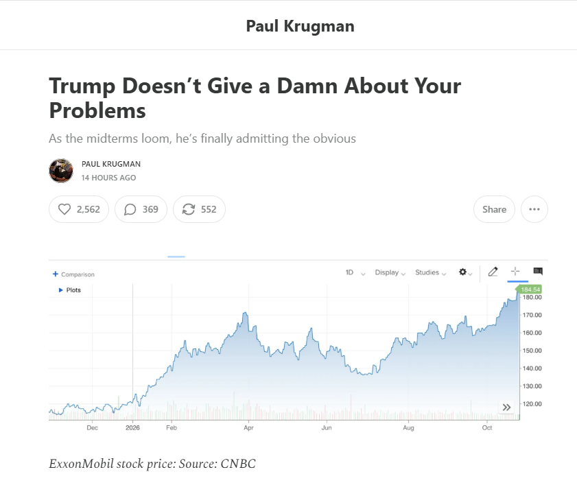
背景与关键数据
- 美国中期选举：2026 年 11 月 3 日（下周二），改选全部众议院和三分之一参议院席位。中期选举常被视为对总统的"期中考试"，执政党通常失分。
- 5600 亿美元怎么算：75 亿桶 × 每桶额外约 75 美元 ≈ 5600 亿美元，约占美国 GDP 的 1.9%。
- 美国现在是石油净出口国：油价上涨时，石油公司和产油州受益，普通消费者受损。所以"国家赚钱"和"老百姓受损"可以同时成立，这正是克鲁格曼说的"转移支付"。
图片解读
- 克鲁格曼 Substack 文章截图：标题"特朗普根本不在乎你的问题"，副标题"中期选举临近，他终于承认了显而易见的事"。配图是埃克森美孚股价（来源 CNBC）：2025 年 12 月约 115 美元，2026 年 4 月涨到约 172 美元，6 月回落到约 137 美元，之后一路走高，最新约 184.5 美元，比战前上涨约 60%。
为什么重要 / 对市场和经济的含义
- 能源价格的政治经济学：油价是选民最直观的通胀指标。帖 27 显示美国消费者信心处于 1980 年代以来的低位，认为政府经济政策糟糕的比例创新高，能源价格是重要原因。
- 中期选举后的政策变化：如果民主党拿下国会，特朗普的财政、关税和对外政策会受到更多制约。市场会关注结果对财政赤字、美债供给（帖 26）的影响。
- 对股市的结构影响：能源股大涨、消费股承压。美银泡沫指标显示能源板块 BRI 约 0.70（帖 9），已经偏热。
延伸知识
- 油价冲击的"税收效应"：对石油进口国或消费为主的经济体来说，油价上涨相当于对消费者征税，钱流向产油者。1973 年和 1979 年两次石油危机都导致美国陷入滞胀（经济停滞 + 高通胀）。
- "痛苦指数"：通胀率 + 失业率。经济学家奥肯发明的这个指标常被用来预测选举结果，痛苦指数上升时执政党往往表现不佳。
帖 16 · Jason 八卦：一则买凶新闻和他听来的地方见闻（美西 10-27 17:51）
Jason 用一句话点了一条社会新闻，表达对某些地方黑暗面的震惊。读全文收起
帖子原文
（要点转述）这两天南方周末、界面等都报道了一则买凶新闻，价格是"100"（开价"30"）。Jason 说他在工作时第一次从客户那里听到一些地方八卦，吓得手机都掉地上了。#八卦#
（本帖无图）
背景与关键数据
- 帖子没有给出新闻的具体内容，"100"和"30"也没写单位，从语境看是买凶的价码（最终价和最初开价）。本报告无法确认新闻细节，不做推测。
- "搬砖"是 Jason 对自己日常工作的说法。他经常接触不同地区的客户，会听到很多基层的真实情况。
为什么重要 / 对市场和经济的含义
- 这是一条非财经的"八卦"帖，信息量有限。从 Jason 的一贯视角看，他关注的是地方治理和基层社会生态，这些往往是宏观数据里看不到的东西。
延伸知识
- "软信息"的价值：宏观研究除了看统计数据，也会参考实地调研、从业者访谈等"软信息"。帖 21（花旗电池产业链调研）、帖 22（汇丰和行业专家交流）就是机构做软信息的例子。个人的一手见闻虽不能代表整体，但能帮助理解数据背后的真实情况。
帖 17 · 国信达 + Jason 自制图：各城市二手房挂牌价今年继续跌，离高点普遍三到四成（美西 10-28 11:39）
2025 年底各城市二手房挂牌价已经比高点低了 20%–40%，2026 年又普遍跌了 5%–12%，单周的小幅上涨改变不了趋势。读全文收起
帖子原文
（要点转述）国信达：第 43 周，全国住宅出售挂牌价指数环比上涨 0.03%，北京环比下降 0.06%，上海下降 0.71%，广州上涨 1.06%，深圳下降 0.25%。Jason 配了一张自制图。#房价#
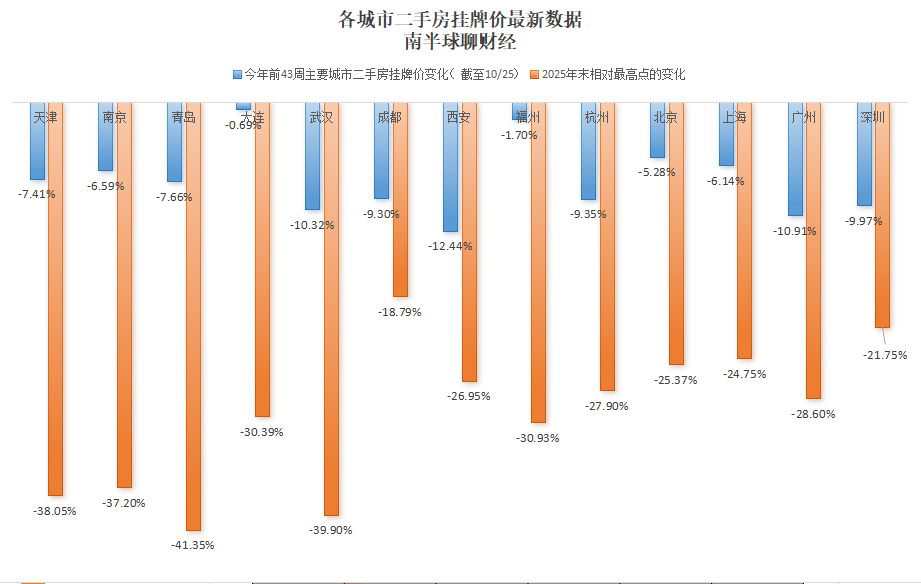
背景与关键数据
- 周度挂牌价环比：单周涨跌幅度很小，容易受个别房源影响（比如广州一周涨 1.06%），要看累计变化。
- 两段跌幅要相乘：从高点到现在的总跌幅 = 1 − (1 − 截至 2025 年底的跌幅) × (1 − 今年的跌幅)。
图片解读
- 《各城市二手房挂牌价最新数据》（Jason 自制，13 个城市）：蓝柱是今年前 43 周（截至 10 月 25 日）的挂牌价变化，橙柱是 2025 年末相对历史最高点的变化。
| 城市 | 2025 年末较高点 | 今年前 43 周 | 合计较高点（估算） |
|---|---|---|---|
| 青岛 | -41.35% | -7.66% | 约 -46% |
| 武汉 | -39.90% | -10.32% | 约 -46% |
| 天津 | -38.05% | -7.41% | 约 -43% |
| 南京 | -37.20% | -6.59% | 约 -41% |
| 广州 | -28.60% | -10.91% | 约 -36% |
| 西安 | -26.95% | -12.44% | 约 -36% |
| 杭州 | -27.90% | -9.35% | 约 -35% |
| 福州 | -30.93% | -1.70% | 约 -32% |
| 大连 | -30.39% | -0.69% | 约 -31% |
| 深圳 | -21.75% | -9.97% | 约 -30% |
| 北京 | -25.37% | -5.28% | 约 -29% |
| 上海 | -24.75% | -6.14% | 约 -29% |
| 成都 | -18.79% | -9.30% | 约 -26% |
（"合计"一列是本报告按上面的公式估算的。）
- 规律：二线城市（青岛、武汉、天津、南京）从高点跌得最深，接近腰斩；一线城市约三成；今年跌幅最大的是西安、广州、武汉、深圳。
为什么重要 / 对市场和经济的含义
- "一线企稳"的说法要打折扣：北京、上海今年仍跌了 5%–6%，深圳跌了约 10%，只是比二线城市慢一些。
- 居民资产负债表：很多家庭在高点贷款买房，房价跌三四成后，首付基本亏光，部分出现"负资产"。这会抑制消费、推高储蓄，是中国内需不振的重要原因之一。
- 对银行：房贷本身违约率不高，但抵押物价值下降、提前还贷增多，会压缩银行的息差和资产规模（关联帖 4）。
延伸知识
- "负资产"：房产市值低于剩余贷款。香港 1997–2003 年楼价跌约七成，2003 年负资产住宅贷款一度超过 10 万宗，很多家庭多年节衣缩食还贷，消费长期低迷。
- 为什么二线城市跌得更多：人口流入弱、供应量大、前几年涨幅多靠投资需求推动。一线城市人口和就业更集中，需求相对有支撑。
帖 18 · 中证鹏元：城投"造血"能力不足，政府补贴是净利润的 2.19 倍（美西 10-28 11:48）
城投公司的利润一大半是政府补贴给的，补贴又刚好够付利息，离开政府城投几乎无法独立生存，而 2027 年 6 月就要"退平台"了。读全文收起
帖子原文
（要点转述）中证鹏元：城投的造血能力仍然不足。2025 年政府补贴是城投净利润的 2.19 倍，比 2024 年还高，说明城投高度依赖政府，实质性转型进展缓慢。政府补贴只是利息支出的 1.08 倍，也就是补贴只够付利息，城投想靠自己的利润偿还大部分经营性债务非常困难。#TAX#
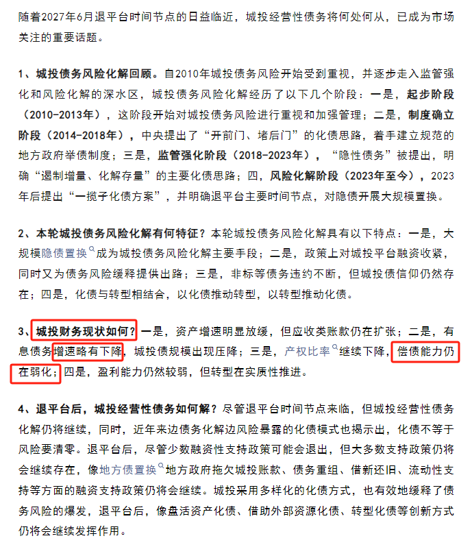
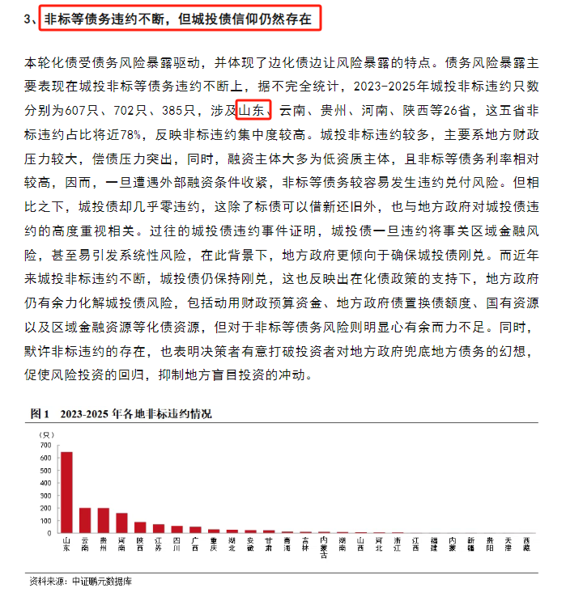
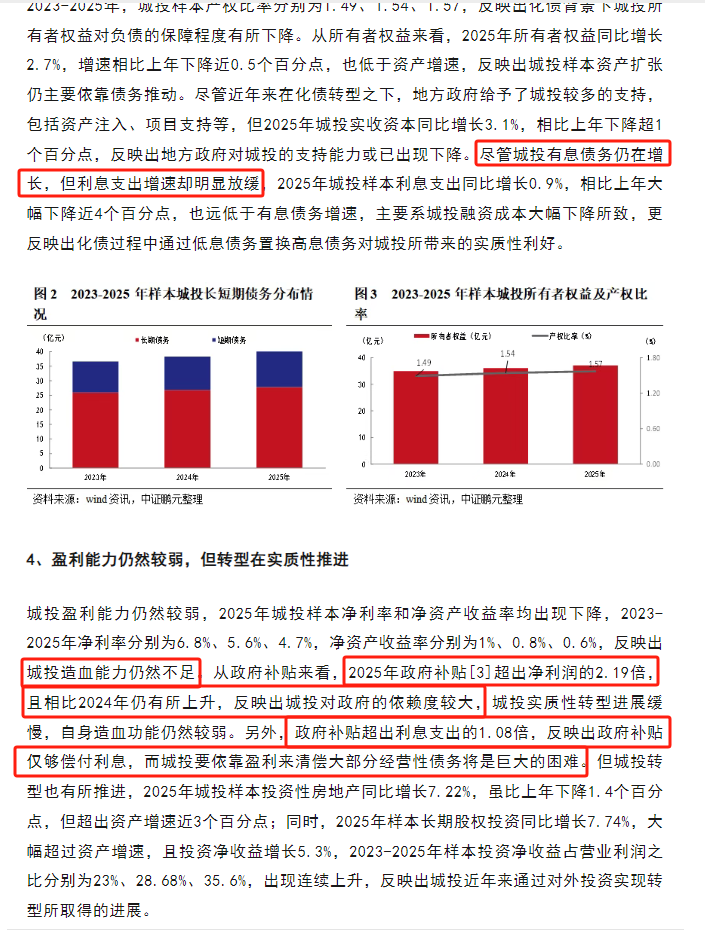
背景与关键数据
- 城投（地方政府融资平台）：地方政府设立的国有公司，负责修路、建园区、搞基建，并以公司名义借钱。过去很多城投债务实际上靠政府兜底，被称为"隐性债务"。
- 退平台：城投不再承担政府融资功能，转为市场化经营的普通国企。按政策，截止时间是 2027 年 6 月。
- 隐债置换：2024 年底推出"一揽子化债方案"，用利率更低的地方政府债券置换城投的高息隐性债务。
- 非标债务：信托、融资租赁、私募等非公开发行的债务，利率高、透明度低，是城投违约的重灾区。
- 产权比率 = 负债 ÷ 所有者权益，越高说明越依赖借钱。
图片解读
- 图 1（报告摘要）：化债经历了四个阶段：起步（2010–2013 年）、制度确立（2014–2018 年，"开前门、堵后门"）、监管强化（2018–2023 年，"遏制增量、化解存量"）、风险化解（2023 年至今，一揽子化债、隐债置换）。本轮特点：大规模隐债置换是主要手段；对城投融资收紧，同时给债务缓释留出路；非标违约不断，但城投债（公开债券）信仰仍在；化债与转型结合。红框标出：资产增速放缓但应收账款仍在扩张，有息债务增速略降，偿债能力仍在弱化，盈利能力较弱。
- 图 2：2023–2025 年城投非标违约分别为 607 只、702 只、385 只，涉及 26 个省份；山东、云南、贵州、河南、陕西五省占比近 78%，山东一省约 640 只，遥遥领先。城投债（公开债券）却几乎零违约：地方政府担心一旦违约会引发区域金融风险，所以优先保公开债；对非标则"有心无力"，默许违约也是在打破"政府兜底"的幻想。
- 图 3：
- 产权比率 2023–2025 年分别为 1.49、1.54、1.57，持续上升；所有者权益 2025 年仅增长 2.7%，实收资本增长 3.1%，说明政府给城投注资的能力在下降。
- 有息债务仍在增长，但利息支出增速明显放缓：2025 年利息支出同比只增 0.9%，比上年下降近 4 个百分点，这是低息债置换高息债的效果。
- 净利率 2023–2025 年为 6.8%、5.6%、4.7%，净资产收益率为 1%、0.8%、0.6%。政府补贴是净利润的 2.19 倍、利息支出的 1.08 倍。
- 转型有一点进展：投资性房地产增长 7.22%，长期股权投资增长 7.74%，投资净收益占营业利润的比例从 23% 升到 35.6%。
为什么重要 / 对市场和经济的含义
- "补贴 > 利润"的意思：如果没有政府补贴，城投整体是亏损的。补贴来自地方财政，而地方财政又依赖土地出让收入（帖 5 新房销售低迷），这是一个循环依赖。
- 退平台后谁来还债：退平台不等于债务消失。中证鹏元认为化债支持政策大多会延续（债务重组、借新还旧、政府清偿拖欠账款），但城投靠自身经营还债的能力很弱。
- 对投资者：城投债仍被视为"准政府信用"，但非标违约频发说明政府的兜底是有选择的。投资城投相关产品要区分公开债和非标。
延伸知识
- "借新还旧"与庞氏融资：经济学家明斯基把借款人分为三类：对冲融资（收入能还本付息）、投机融资（收入只够付利息，本金靠借新还旧）、庞氏融资（连利息都要靠借新债）。城投"补贴刚好够付利息"，大致处在投机融资和庞氏融资之间。
- 日本的地方财政重建：2007 年北海道夕张市财政破产，之后被迫大幅削减公共服务、提高税费，人口持续流失。地方债务问题最后往往由当地居民用更差的公共服务来承担。
帖 19 · 花旗：星宇股份三季度净利下降 40%，大客户问界、一汽大众销量暴跌（美西 10-28 11:56）
汽车零部件公司的命运绑在大客户身上，两大客户销量腰斩，加上整车厂压价，星宇的利润就跟着大跌。读全文收起
帖子原文
（要点转述）花旗：之前因"毕业生风波"受关注的星宇股份，三季度净利润同比下降 40%、环比下降 16%，低于投资者预期。收入下滑主要因为两个重要客户的批发销量骤降：赛力斯问界同比 -46%，一汽大众同比 -44%。#A股#
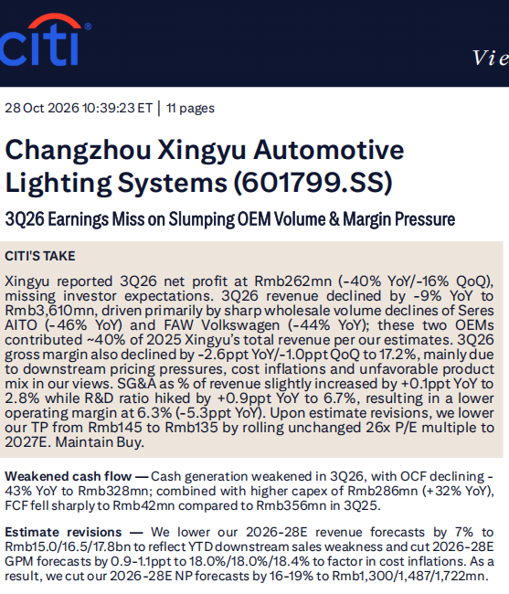
背景与关键数据
- 星宇股份（601799.SS）：常州的汽车车灯制造商，主要客户包括一汽大众、问界（赛力斯）等。Jason 提到它之前卷入过一次"毕业生风波"，帖子没有展开。
- 花旗报告要点：
- 三季度净利润 2.62 亿元（同比 -40%、环比 -16%）；收入 36.1 亿元（同比 -9%）。
- 问界和一汽大众两个客户贡献了 2025 年约 40% 的收入。
- 毛利率同比下降 2.6 个百分点到 17.2%，原因是下游压价、成本上涨和产品结构不利；研发费用率升到 6.7%，营业利润率降到 6.3%。
- 经营性现金流同比 -43% 到 3.28 亿元，资本开支增加 32% 到 2.86 亿元，自由现金流从去年同期的 3.56 亿元降到 0.42 亿元。
- 2026–2028 年净利润预测下调 16%–19%，目标价从 145 元下调到 135 元（2027 年 26 倍市盈率），仍维持"买入"。
图片解读
- 花旗报告首页（2026-10-28）：标题为"三季度业绩因整车厂销量下滑和利润率压力不及预期"。核心数据见上。
为什么重要 / 对市场和经济的含义
- 零部件企业的双重压力：一是客户集中度高，单一客户销量波动影响巨大；二是整车厂利润率只有 1.4%（帖 1），必然把降价压力传给供应商。
- "降价 + 成本上涨"夹击：上游原材料（有色金属等）涨价（帖 13），下游整车厂压价，零部件企业毛利率两头受挤。
- 花旗仍给"买入"：分析师认为短期受挫但长期竞争力还在。这也说明卖方的评级要结合目标价调整和盈利预测下调一起看，不能只看"买入"两个字（呼应帖 2 分析师下调预测）。
延伸知识
- 客户集中度风险：前五大客户占收入的比例越高，公司的议价能力越弱、业绩波动越大。苹果供应链公司也有类似问题，苹果砍单时，供应商股价往往暴跌。
- 自由现金流（FCF）= 经营现金流 − 资本开支：利润是会计概念，现金流才是真金白银。利润下降 40%，自由现金流却下降了约 88%，说明这个季度"赚到手的钱"比利润表显示的更少。
帖 20 · 联合资信：2026 年上半年城投债务规模还在增长（美西 10-28 12:01）
化债喊了好几年，城投的债务总量仍在增长，只是增速慢了下来；短期偿债压力在云南、贵州等省份依然突出。读全文收起
帖子原文
（要点转述）联合资信：2026 年上半年，城投公司债务规模持续增长。#TAX#
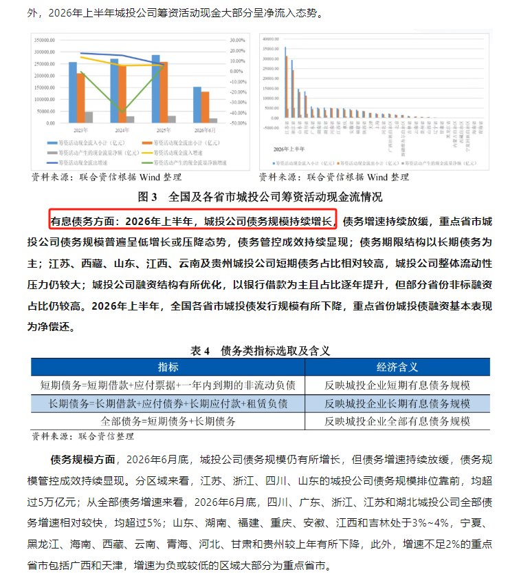
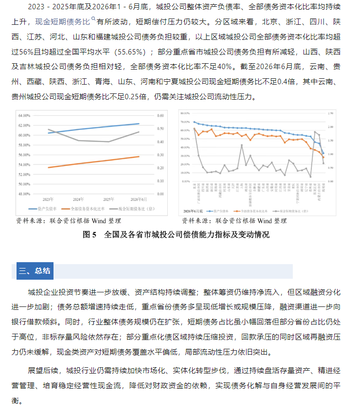
背景与关键数据
- 联合资信：中国主要的信用评级机构之一。
- 现金短期债务比 = 货币资金 ÷ 短期债务：衡量手头现金能覆盖多少一年内到期的债务。低于 1 说明现金不够还短债，需要借新还旧。
- 全部债务资本化比率 = 全部债务 ÷（全部债务 + 所有者权益）：衡量资本结构中债务的比重。
图片解读
- 图 1（报告节选：筹资现金流与债务规模）：
- 左图：全国城投筹资活动现金流，2023–2025 年流入约 25–28 万亿元（单位为亿元的柱状图），2026 年上半年约 15 万亿；筹资净额仍为正，即城投整体还在净融资。
- 右图：各省 2026 年上半年筹资现金流，江苏遥遥领先，浙江、四川、山东其次。
- 红框：有息债务方面，2026 年上半年城投公司债务规模持续增长，但增速持续放缓，重点省份普遍低增长或压降；江苏、西藏、山东、江西、云南、贵州短期债务占比较高；融资结构转向以银行借款为主，部分省份非标占比仍较高；公开发债规模下降，重点省份基本是净偿还。
- 规模：截至 2026 年 6 月底，江苏、浙江、四川、山东的城投债务都超过 5 万亿元；四川、广东、浙江、江苏、湖北的债务增速超过 5%；12 个重点化债省份大多增速为负或很低。
- 图 2（偿债能力指标）：
- 左图（全国，2023 年至 2026 年 6 月）：资产负债率从约 60.5% 升到约 62.3%；全部债务资本化比率从约 53.5% 升到约 55.6%；现金短期债务比 2023 年约 0.48 倍、2024–2025 年约 0.40 倍，2026 年 6 月回升到约 0.47 倍。
- 右图（分省）：北京、浙江、四川、陕西、江苏、河北、山东、福建的全部债务资本化比率超过 56%；云南、贵州的现金短期债务比不足 0.25 倍，即手头现金不到短债的四分之一。
- 总结段：投资放缓、资产结构调整，整体仍是净融资，区域分化加剧；短期债务占比小幅回落但仍高，部分区域流动性压力突出。
为什么重要 / 对市场和经济的含义
- 化债 ≠ 减债：隐债置换只是把高息债换成低息债，把城投的债换成政府的债，总债务没有减少。城投资产负债率还在上升。
- 区域分化：江浙等发达地区债务大但资产和财力也强；云贵等地区债务相对财力更重，现金极度紧张。这些地区的非标违约（帖 18）更多。
- 与帖 18 合看：利润靠补贴、现金不够还短债、债务还在增长，城投问题需要很长时间消化，会持续拖累地方投资和基建。
延伸知识
- 流动性风险 vs 偿付能力风险：流动性风险是"有资产但一时拿不出现金"，偿付能力风险是"资产根本不够还债"。现金短期债务比低主要是流动性问题，可以靠展期、借新还旧缓解；但如果资产（如园区、道路）本身不产生收入，长期就会变成偿付能力问题。
- 美国市政债对照：美国地方政府也发债（市政债），但有破产机制（如 2013 年底特律破产）。中国城投没有成熟的破产重整机制，所以只能靠上级政府协调、展期置换。
帖 21 · 花旗：动力电池排产走弱，出口退税取消前的抢出口窗口在收窄（美西 10-28 12:04）
电池厂产量在走下坡路：出口退税要取消、淡季要来了、新产能还在投产，价格和利润都会被压。读全文收起
帖子原文
（要点转述）花旗电池产业链实地调研：2026 年 10 月实际电池排产比 10 月中旬渠道调查的预期低约 3%；11 月五家头部电池厂的计划产量预计再环比下降 2%，至 187.5GWh。花旗预计这种疲弱势头会延续几个月，原因有二：2027 年出口退税率将从 6% 降至 0%，提前抢出口的窗口在年底前逐渐收窄；春节前后的传统淡季即将到来。同时又有新增产能陆续投产，短期内电池均价和利润率可能同时承压。#经济数据#
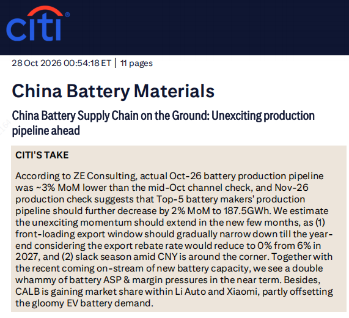
背景与关键数据
- 出口退税：出口商品在国内缴纳的增值税，出口时由国家退还一部分，相当于给出口补贴。动力电池的退税率在 2026 年已经从 9% 降到 6%，2027 年起降到 0。退税越低，出口成本越高，企业会赶在取消前多出口（"抢出口"）。
- GWh（吉瓦时）：电池容量单位，1 GWh = 100 万千瓦时，大约够 1.5–2 万辆电动车。187.5 GWh 相当于约 300 万辆车的电池。
- ASP（平均售价）：电池每瓦时的平均价格。
- 花旗另外提到：中创新航（CALB）在理想和小米的电池采购份额在上升，部分抵消了电动车电池需求的疲弱。
图片解读
- 花旗报告首页（2026-10-28，"中国电池产业链实地观察：排产管道乏善可陈"）：数据来自 ZE Consulting（真锂研究）。内容和 Jason 的转述一致，结论是"电池均价和利润率的双重打击"。
为什么重要 / 对市场和经济的含义
- 政策退坡的信号：取消电池出口退税，意味着政府不再补贴这个已经全球领先的行业，同时也是在回应海外对"产能过剩"的指责（帖 29 泰国、此前欧盟的保障措施）。
- 产能过剩的老问题：需求放缓的同时新产能还在投产，供大于求，价格战难以避免。这和帖 1 汽车、帖 13"其他行业利润下滑"是同一个故事。
- 出口数据的扰动：年底前抢出口会让出口数据好看，明年一季度可能出现"透支"后的回落，读数据时要注意。
延伸知识
- "抢跑效应"：政策变化前的提前行为，会把未来的需求挪到现在。比如购置税优惠到期前汽车销量暴增，到期后骤降。分析数据时要把这类效应剔除，才能看清真实趋势。
- 增值税出口退税的逻辑：国际惯例是"消费地征税"，出口商品退还国内增值税，避免双重征税。所以退税本身不完全是补贴；但退税率可以灵活调整，中国常用它来调节特定行业的出口。
帖 22 · 汇丰：商场两极分化，奢侈品复苏"明年也别指望"（美西 10-28 12:09）
中国消费在分化：好商场、体验消费和平价轻奢还行，普通商场和奢侈品都难；商业 REITs 想扩容，却卡在"卖方不愿低价上市"。读全文收起
帖子原文
（要点转述）汇丰 10 月 19–20 日与两位行业专家交流：CBRE 研究主管 Sam Xie 谈购物中心经营与中国消费趋势，黑石董事总经理 Frank Zhao 谈商业地产、消费类 REITs 和资产估值。CBRE 专家认为，尽管消费增长低迷、竞争加剧，位置优越、管理良好的商场仍能跑赢；缺乏规模或明确定位的项目越来越难维持租金增长，尤其是餐饮、家庭生活服务和教育类租户占比较高的商场。股市波动削弱了财富效应，奢侈品消费者更谨慎，但以体验为核心的消费（旅游、现场演出、娱乐）仍有韧性。黑石专家认为，证监会框架下商业 REITs 的推出显著改善了商业地产的流动性，但市场扩张仍有障碍：监管目标和原始权益人的激励错位，原始权益人不愿以过于保守、可能低于账面价值的估值把资产上市。汇丰预计，除非有显著政策支持，2026 年四季度零售销售仍将承压；汇丰全球消费团队认为，中国奢侈品消费既没有清晰的复苏时间表，也没有证据表明复苏已经开始，中国大陆奢侈品复苏已不再是一个"可以期待明年"的故事。#经济数据#
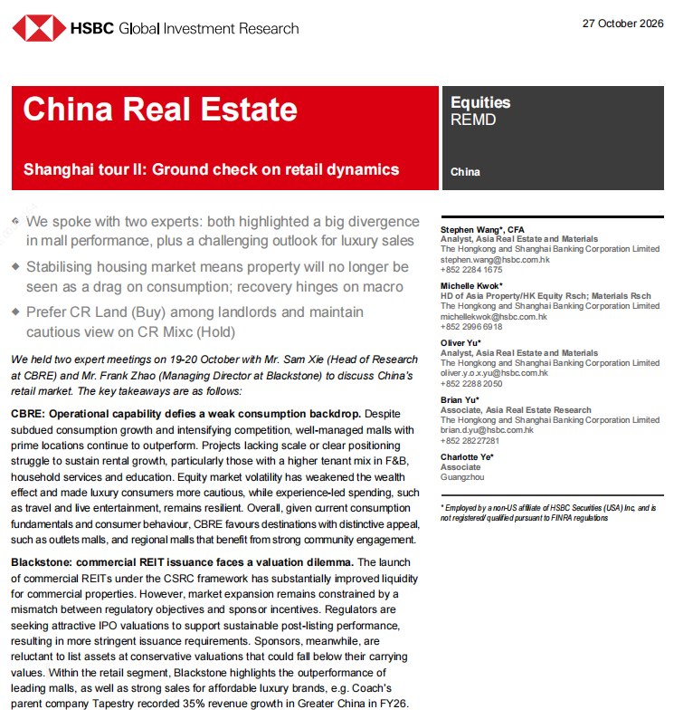
背景与关键数据
- 汇丰报告首页的三条要点：两位专家都强调商场表现分化大、奢侈品前景困难；房地产市场趋稳后，地产将不再被视为消费的拖累，消费复苏取决于宏观；偏好华润置地（买入），对华润万象生活保持谨慎（持有）。
- 黑石的补充（报告原文）：头部商场表现更好，平价轻奢品牌销售强劲，比如 Coach 的母公司 Tapestry 2026 财年大中华区收入增长 35%。
- 原始权益人：把商场等资产打包做成 REITs 的原所有者（通常是开发商）。如果按市场估值上市，资产价格低于账面价，就要确认亏损，所以他们宁可不上市。
图片解读
- 汇丰报告首页（2026-10-27，"上海调研第二站：零售动态实地观察"）：左侧是要点和两位专家的观点摘要，右侧是分析师信息。内容和 Jason 的转述一致。
为什么重要 / 对市场和经济的含义
- "消费降级"还是"消费分级"：奢侈品弱、轻奢强、体验强，说明消费者不是不花钱，而是更挑剔、更看重性价比和体验。
- 商场的"马太效应"：好商场越来越好，差商场越来越差。此前的帖子里美银提到写字楼和物流租金下跌，商场是商业地产里相对稳定的，但内部分化很大。
- REITs 的定价矛盾：监管希望 REITs 上市后表现好、保护投资者，所以要求估值保守；卖方想卖高价。这个矛盾不解决，商业 REITs 的扩容速度就有限。
延伸知识
- 财富效应：资产价格上涨让人感觉更富有，从而增加消费。房价、股价下跌时反过来，人们会削减可选消费，奢侈品最先受影响。
- "口红效应"：经济不好时，人们买不起大件奢侈品，转而买口红这类"小奢侈"满足自己。平价轻奢走强，可以看作口红效应的升级版。
帖 23 · 国泰海通：三季度银行理财大增 1.71 万亿，资金在逃离风险（美西 10-28 12:12）
股市波动加大、存款利率太低，居民把钱从存款和股市挪进"稳稳赚一点"的银行固收理财，三季度理财规模增长远超去年同期。读全文收起
帖子原文
（要点转述）国泰海通：三季度银行理财规模高增，可能与市场风险偏好下移有关。权益市场波动加大，股债跷跷板效应下，固收类产品的边际需求抬升。#金融#
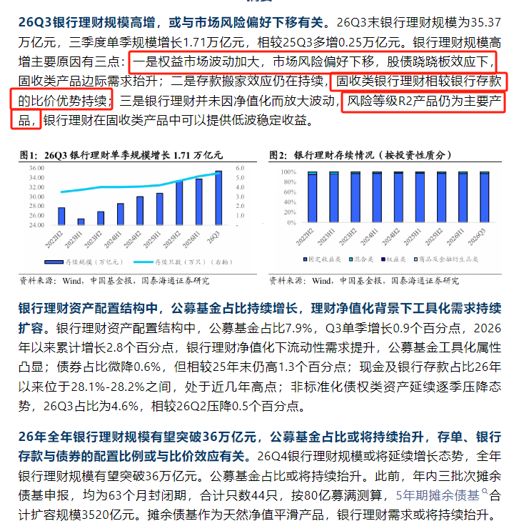
背景与关键数据
- 银行理财：银行理财子公司发行的资管产品，大部分投资债券、存款等固定收益资产。2018 年资管新规后，理财产品打破"刚性兑付"、改为"净值化"，净值会波动，不再保证收益。
- R2 风险等级：理财产品风险从 R1（最低）到 R5（最高），R2 是"中低风险"，主要投债券，波动小。
- 股债跷跷板：股市下跌时资金流向债市，反之亦然，两者常常反向波动。
- 存款搬家：存款利率下降后，储户把钱转到收益更高的理财、基金。
图片解读
- 报告截图（标题和红框均来自原图）：
- 2026 年三季度末银行理财规模 35.37 万亿元，三季度单季增长 1.71 万亿元，比 2025 年三季度多增 0.25 万亿元。
- 三个原因（红框）：权益市场波动加大、风险偏好下移，股债跷跷板下固收类需求上升；存款搬家仍在持续，固收类银行理财相较银行存款的比价优势持续；理财净值化没有放大波动，R2 产品仍是主力，在固收类产品中可以提供低波动的稳定收益。
- 图 1（半年度存续规模，万亿元）：2022 年下半年约 27.6，2023 年上半年降到约 25.3（2022 年底债市大跌引发"赎回潮"后），之后逐步回升，2025 年下半年约 33、2026 年三季度约 35.4；存续只数（右轴）也在上升。
- 图 2（按投资性质的存续结构）：固定收益类始终占 95% 以上，混合类、权益类、商品及金融衍生品类合计只有几个百分点。
- 资产配置：公募基金占比 7.9%，三季度提升 0.9 个百分点，2026 年以来累计提升 2.8 个百分点；债券占比微降 0.6 个百分点，但比 2025 年末仍高 1.3 个百分点；现金及银行存款占比在 28.1%–28.2%，处于近几年高点；非标资产占比降到 4.6%。
- 展望：2026 年全年理财规模有望突破 36 万亿元；年内三批摊余成本法债基（共 44 只，63 个月封闭期）合计扩容约 3520 亿元，作为天然的"净值平滑"产品，可能持续被理财配置。
为什么重要 / 对市场和经济的含义
- 居民风险偏好下降的直接证据：和帖 10（买黄金）、帖 4 和 24（高股息）是同一种行为：在不确定性面前，钱在找"稳"。
- 对债市的支撑：理财资金主要买债，规模扩张会压低债券收益率，进一步加剧"资产荒"。
- 对股市：理财资金几乎不买股票（权益类占比极低），所以理财大增不能直接理解为"增量资金入市"。
延伸知识
- 2022 年底的理财"赎回潮"：当时债市突然下跌，理财净值大面积回撤，投资者恐慌赎回，理财被迫卖债，债市进一步下跌，形成负反馈。这次教训后，理财更偏好"摊余成本法"等平滑净值的工具，以降低波动。
- 摊余成本法：资产按买入成本加利息逐日计价，不按市场价格波动，所以净值很平稳。代价是封闭期长、不能随时赎回，相当于"用流动性换稳定"。
帖 24 · 伍戈：低物价、老龄化和"中年企业"，三股力量支撑红利资产（美西 10-28 12:17）
物价低、人口老、企业变成熟，这三件事同时发生时，"稳定分红"的股票就会长期受欢迎，中国正处在这个阶段。读全文收起
帖子原文
（要点转述）伍戈：放眼世界，一国物价若持续低位，红利资产往往具有比较优势；此时若出现科技等结构性机会，可以阶段性替代红利，一旦退潮，红利重新占优。地缘风险上升也是微观主体推崇红利的原因，近两年这一因素部分对冲了 AI 的"虹吸"效应。对步入深度老龄化的经济来说，人口不再是"慢变量"，红利资产会更快渗透到风险偏好趋弱的配置理念中。值得一提的是，红利不仅是需求，也是供给：随着投资回报率边际递减、行业集中度提升，更多企业进入稳定的"中年期"，提供更多分红契机。展望未来，全球科技叙事和地缘政治存在不确定性，叠加美国中选等扰动，市场风险偏好将高波动；年末国内经济和政策节奏相对平缓，增量政策和资金拨付仍在进行，效力可能更多在明年初体现；剔除油价冲击后的物价仍在低位，红利占优特征似乎依然明显。#A股#
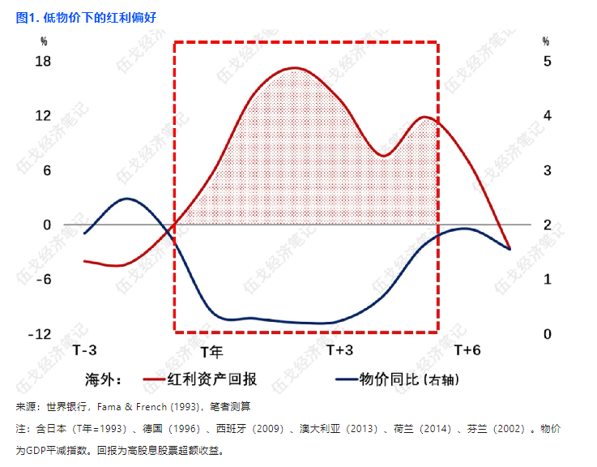
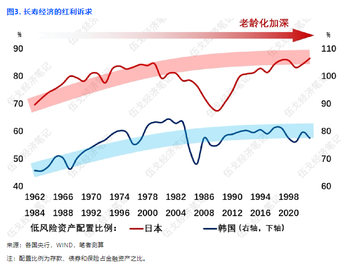
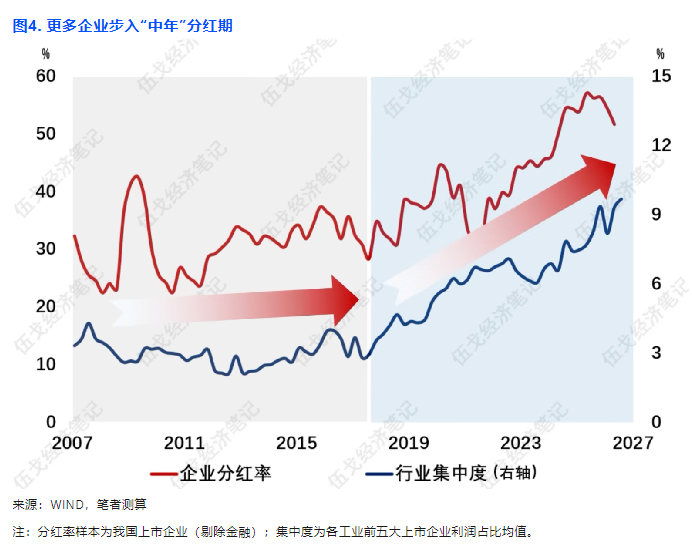
背景与关键数据
- 伍戈：经济学家，曾在央行研究部门工作，近年任长江证券首席经济学家，图上的水印"伍戈经济笔记"是他的公众号。
- 红利资产：高股息、稳定分红的股票，如银行、公用事业、能源、交通基础设施。
- "中年期"企业：行业已经过了高速扩张期，不需要大量再投资，现金流稳定，于是更有能力也更愿意分红。
- AI 的"虹吸"效应：资金都涌向 AI 科技股，其他板块被抽血。
图片解读
- 图 1《低物价下的红利偏好》：海外六个案例的平均（日本 1993 年、德国 1996 年、西班牙 2009 年、澳大利亚 2013 年、荷兰 2014 年、芬兰 2002 年，T 年为物价下行开始的年份）。
- 蓝线（物价同比，右轴，GDP 平减指数）：T-3 年约 2.5%，T 年附近跌到约 0.4%，之后 3 年左右在低位，T+5 后回升到约 2%。
- 红线（高股息股票超额收益，左轴）：T 年前为负（约 -4%），物价下行开始后迅速上升，T+2 年前后达到约 +17% 的峰值，T+4 又有一波约 +12%，到 T+6 物价回升后才转负。
- 红框标出：物价低位的那几年，就是红利资产跑赢的窗口。
- 图 2《长寿经济的红利诉求》：日本（上轴 1962–2004 年）和韩国（下轴 1984–2024 年）的低风险资产（存款、债券、保险）占金融资产比例。
- 日本从约 70% 升到约 85%（中间 80 年代末泡沫期一度降到约 67%）。
- 韩国从约 67% 升到约 78%（2008 年前后有一次下探）。
- 箭头"老龄化加深"：随着人口变老，家庭越来越偏好低风险资产。
- 图 3《更多企业步入"中年"分红期》（2007–2026 年）：
- 红线（中国上市公司剔除金融后的分红率，左轴）：2007–2017 年大致在 25%–35% 之间；2018 年后持续上升，2025 年前后达到约 55%–57%，最新约 52%。
- 蓝线（行业集中度，右轴，工业前五大上市公司利润占比均值）：2007–2017 年在 3% 左右，之后一路升到约 9.6%。
- 两条线在 2018 年后一起上升：行业越集中、龙头越成熟，分红越多。
为什么重要 / 对市场和经济的含义
- 对投资风格：伍戈判断年末红利仍占优，理由是"剔除油价冲击后的物价仍在低位"。这意味着他认为国内核心通胀很弱，需求不足的格局没变（对照帖 6、13）。
- "日本化"的担忧：图 1 和图 2 引用的都是日本等物价长期低迷或深度老龄化的国家，暗含中国可能重走类似道路的判断。
- 政策时点：增量政策和资金拨付效果在明年初，所以年末更适合防守。
延伸知识
- 为什么低通胀利好红利股：低通胀通常伴随低利率，债券收益率下降，股息率的相对吸引力上升（帖 4 的"股息溢价"）；同时低通胀环境下企业很难靠涨价提高利润，能稳定分红的公司就显得稀缺。
- 企业生命周期理论：初创期烧钱、成长期再投资、成熟期分红回购、衰退期收缩。美国的苹果、微软也是从不分红走到大额分红回购。一个经济体里成熟企业占比越高，整体分红率就越高。
帖 25 · 新西兰央行意外暂停加息，花旗、高盛、野村各有说法（美西 10-28 12:23）
新西兰央行本来被普遍预期加息，结果按兵不动；机构争论的焦点是：现在不加，以后是不是要加更多？读全文收起
帖子原文
（要点转述）花旗、高盛、野村分别就新西兰央行意外暂停加息发了报告。高盛：会前金融市场定价显示 2027 年 8 月官方现金利率（OCR）可能达到 3.75%，比高盛自己的预测多出约 50 个基点，暂停导致新西兰元走低。野村是少数提前预测暂停的机构，认为从央行的中长期政策判断看，中性利率参考区间约 3.1%–3.5%，当前 2.75% 仍略偏宽松。花旗认为，现在加息 25 个基点反而可能降低未来被迫加息更多的风险，这次是错失时机，3.00% 大致可视为中性水平。#金融#
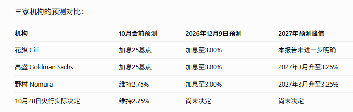
背景与关键数据
- OCR（官方现金利率）：新西兰央行（RBNZ）的政策利率，相当于美联储的联邦基金利率。目前 2.75%。
- 中性利率：既不刺激也不抑制经济的利率水平。政策利率低于中性利率是"宽松"，高于是"紧缩"。三家机构对中性利率的估计：野村 3.1%–3.5%，花旗约 3.00%。2.75% 在两者看来都偏松。
- 背景：此前的帖子里，JPM 预计 RBNZ 会加息 25 个基点、市场定价约 80% 概率，所以这次暂停是"意外"。
图片解读
- 三家机构预测对比表：
| 机构 | 10 月会前预测 | 2026 年 12 月 9 日预测 | 2027 年峰值预测 |
|---|---|---|---|
| 花旗 | 加息 25 基点 | 加息至 3.00% | 报告未明确 |
| 高盛 | 加息 25 基点 | 加息至 3.00% | 2027 年 3 月升至 3.25% |
| 野村 | 维持 2.75% | 加息至 3.00% | 2027 年 3 月升至 3.25% |
| 10 月 28 日实际 | 维持 2.75% | 尚未决定 | 尚未决定 |
三家都预计 12 月会加息到 3.00%，分歧只在这次加不加。
为什么重要 / 对市场和经济的含义
- 全球央行的"加息尾声"：美联储（帖 28）、澳洲联储（帖 3）、新西兰央行都在油价冲击后的通胀里犹豫。这次新西兰暂停，可能是"小国央行"担心加息伤害经济的信号。
- 汇率影响：意外不加息，利差优势缩小，新西兰元走弱。对于依赖进口的小型开放经济体，货币贬值又会推高进口物价，形成两难。
- 市场定价 vs 央行：高盛指出市场定价的加息幅度比它的预测多 50 个基点，央行暂停相当于对市场"过度鹰派"的纠正。
延伸知识
- "先发制人" vs "等待数据"：花旗的观点代表"先发制人"派：早一点小幅加息，可以避免通胀预期固化后被迫大幅加息（1970 年代的教训）。央行的选择代表"等待数据"派：怕加息过度伤害经济。2021–2022 年美联储认为通胀是"暂时的"，等了太久，后来只能激进加息，就是反面例子。
- 为什么关注新西兰：新西兰央行 1989 年在全球率先实行通胀目标制，被很多国家效仿，它的政策常被视为小型发达经济体的风向标。
帖 26 · 彭博：美国最亲密的盟友前 8 个月少买了六成多美债，日本几乎停买（美西 10-28 13:20）
过去盟友们把贸易顺差"自动"换成美债，现在这个习惯在松动，美国借钱的成本可能因此更高。读全文收起
帖子原文
（要点转述）彭博：前 8 个月，与美国关系最密切的国家和地区净买入美债（不含短期国库券）的规模比上年同期下降超过 60%，是 2021 年以来同期最低，在亚洲尤其明显，一些拥有巨额贸易顺差的亚洲经济体正在减少把盈余投入美债。日本是美债最大的海外持有国，前 8 个月净买入同比暴跌 99%。管理超过 6 万亿美元资产的道富投资管理表示，美债市场并没有失去外国买家，而是在失去那些"会自动买入"的投资者；随着美国政策越来越难预测，投资者越来越难证明长期大幅超配美债、自动把资本再投入美债是合理的。#金融#
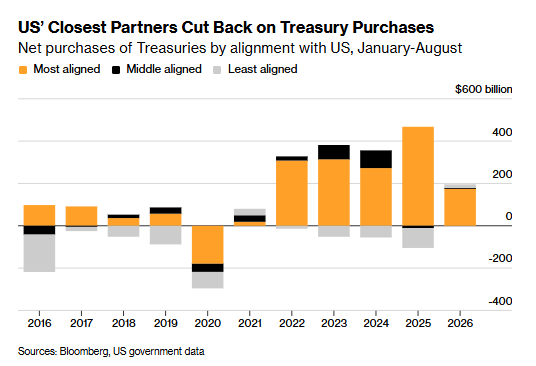
背景与关键数据
- 美债的外国持有者：日本、中国、英国是最大的几家。外国投资者持有约三成的可交易美债。
- "自动买家"：出口国赚到美元后，央行或机构会习惯性地把美元投入美债，这是美元霸权的重要支撑，有时被称为"美元循环"。
- 按与美国的关系分组：彭博把各国分成"最亲密""中间""最疏远"三组，比如日本、英国、欧洲属于最亲密。
图片解读
- 彭博图《美国最亲密的伙伴减少购买美债》（各年 1–8 月净买入美债，十亿美元）：
- 橙色（最亲密）：2016–2019 年每年约 350–900 亿；2020 年疫情时约 -1900 亿；2022–2024 年约 2650–3100 亿；2025 年约 4600 亿的高点；2026 年约 1700 亿，比 2025 年少了六成多。
- 黑色（中间）：2023、2024 年约 700–900 亿，2026 年接近 0。
- 灰色（最疏远）：大多数年份为净卖出，2016 年最多（约 -1800 亿），2026 年反而小幅为正（约 200 亿）。
为什么重要 / 对市场和经济的含义
- 美国财政赤字需要有人买单：美国每年赤字近 2 万亿美元，需要大量买家。外国"自动买家"减少，就只能靠更高的利率吸引国内投资者，这推高期限溢价（帖 3 花旗所说的"全球资本供给压力"）。
- 日本的特殊原因：日本国债收益率今年大幅上升（此前的帖子提到日本 10 年期国债收益率上升超过 80 个基点），日本投资者在本国就能拿到不错的收益，没必要冒汇率风险买美债。
- "政策不可预测"的代价：关税、制裁、对美联储独立性的担忧，都会让外国投资者降低对美国资产的配置。
延伸知识
- "美元霸权"与"过度特权"：法国前财长德斯坦在 1960 年代说美国享有"过度特权"：美国可以用自己印的货币借钱，全世界都愿意持有。这种特权建立在信任上，一旦外国人不再"自动"买美债，美国的借钱成本就会上升。
- 特里芬难题：美元作为全球储备货币，要求美国持续输出美元（贸易逆差），但长期逆差又会削弱人们对美元的信心。这个矛盾自 1960 年提出以来一直存在。
帖 27 · 彭博：AI 撑起美国增长，美国人却比 80 年代以来任何时候都更悲观（美西 10-28 13:24）
宏观数据说美国经济在加速，老百姓却觉得日子越来越难，这是"数据好、体感差"的典型分裂。读全文收起
帖子原文
（要点转述）彭博：AI 正在为美国经济扩张提供动力，最近几个月增长有加速迹象。高盛估计过去一年 AI 让美国 GDP 增速提高了 0.1 个百分点；ING 估计 AI 的直接和间接影响约贡献 0.8 个百分点，相当于整体增长的三分之一。但美国消费者感受并不好：最新消费者信心指数降到五个月低点，处在 1980 年代以来罕见的低水平；超过 30% 的美国人认为五年后自己的财务状况会更糟，这一比例是 1980 年代的两倍；认为政府经济政策表现糟糕的比例创历史新高。#其他国家经济#
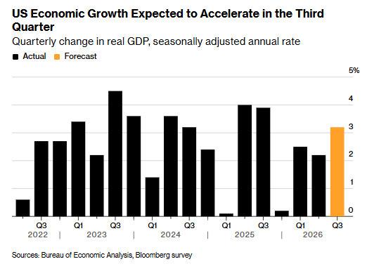
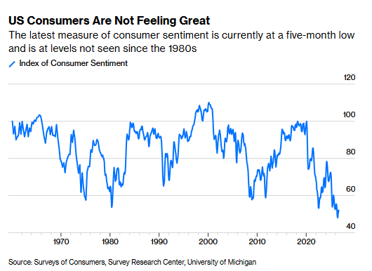
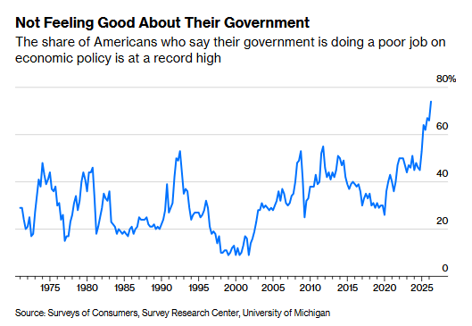
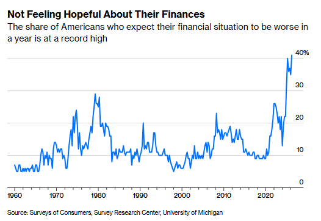
背景与关键数据
- AI 对 GDP 的贡献为什么估计差这么多：高盛只算 AI 带来的生产率提升（0.1 个百分点），ING 还算上数据中心建设、芯片和电力投资等"间接"拉动（0.8 个百分点）。前者是"AI 让大家更能干"，后者主要是"为 AI 花的钱"。
- 密歇根大学消费者信心指数：每月调查美国家庭对当前和未来经济、个人财务的看法，1966 年 = 100。
- 为什么体感差：油价暴涨（帖 15）、通胀 3.7%（帖 33）、利率上升让房贷车贷更贵，而 AI 投资的好处主要落在科技公司和股东身上。
图片解读
- 图 1《预计三季度美国经济增速加快》（季度实际 GDP 环比折年率，2022 年二季度至 2026 年三季度）：黑柱是实际值，橙柱是预测。2023 年三季度最高约 4.5%；2025 年一季度和四季度都接近 0；2025 年二、三季度约 4%；2026 年一季度约 2.5%、二季度约 2.2%，三季度预测约 3.2%。
- 图 2《美国消费者感觉不太好》（密歇根消费者信心指数，1960 年代至今）：2000 年前后在 100 以上；2008 年金融危机、2022 年通胀高峰时跌到 50–55；最新约 50 上下，和 1980 年、2022 年的历史低点相当。
- 图 3《对政府不满》（认为政府经济政策表现糟糕的比例）：长期在 20%–50% 之间波动，2025 年后快速上升，最新约 73%，创历史新高。
- 图 4《对自身财务不乐观》（预计一年后财务状况变差的比例）：1960–2020 年大多在 5%–20%，1980 年约 28%；2022 年后升到约 25%，2025 年以后飙升到约 40%，创历史新高。（图题是"一年后"，帖子正文说"五年后超过 30%"，是两个不同的调查问题。）
为什么重要 / 对市场和经济的含义
- K 型经济：持有股票和房产的家庭受益于 AI 牛市，靠工资生活的家庭被通胀和高利率挤压。总量数据由前者撑起，大多数人的感受来自后者。
- 政治后果：中期选举在即（帖 15），对政府经济政策的不满创新高，执政党可能付出代价。
- 消费的隐忧：信心低迷的消费者最终会减少支出。目前消费还"有韧性"（帖 28 美联储声明），但如果 AI 投资放缓，增长就失去了另一条腿。
延伸知识
- "Vibecession"（情绪衰退）：2022–2023 年美国经济数据不差，但民众普遍觉得经济很糟，这个词由此流行。原因之一是人们对物价"水平"敏感：通胀回落只是涨得慢了，价格不会回到从前。
- 软数据 vs 硬数据：调查类数据（信心指数、PMI）是"软数据"，GDP、就业、零售销售是"硬数据"。两者背离时，市场会争论哪个更可信。历史上软数据有时领先，有时只是情绪噪音。
帖 28 · 美联储按兵不动，两票主张加息，市场仍押注 3 月前再加两次（美西 10-28 13:34）
美联储这次没动，但两位官员想加息，市场仍认为年底到明年春天还要加两次；会议本身偏"鸽"，债市松了一口气。读全文收起
帖子原文
（要点转述）彭博：美联储如期维持利率不变，FOMC 以 10 票赞成、2 票反对，把联邦基金利率维持在 3.75%–4.00%，重申控制通胀的承诺，但没有明确暗示 12 月会加息。沃什否认美国经济过热，但强调多项因素显示经济活动比预期更强，包括健康的居民消费和稳健的企业投资。从明年起美联储每年召开的利率会议次数将减少。消息公布后，美国短期国债收益率和美元双双下跌，两年期美债收益率最多下跌 4 个基点至 4.7%。交易员仍预计到 2027 年年中累计加息三次，每次 25 个基点。过去一段时间推动美债收益率升至数十年高点的抛售行情开始停滞，原因之一是市场对 AI 投资热潮的信心动摇，部分投资者转向避险资产。#金融#
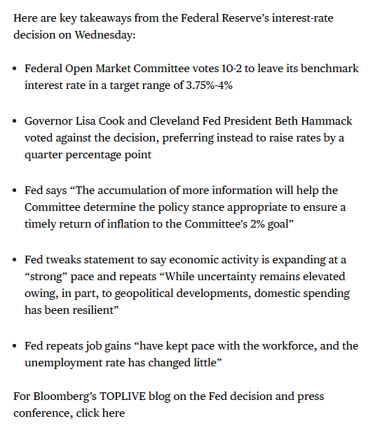
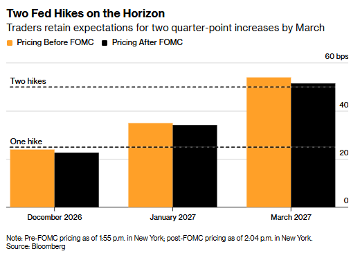
背景与关键数据
- FOMC（联邦公开市场委员会）：美联储决定利率的机构，有 12 名有投票权的委员。
- 反对票：理事丽莎·库克（Lisa Cook）和克利夫兰联储主席贝丝·哈玛克（Beth Hammack）投反对票，主张加息 25 个基点。
- 会议次数减少：沃什一直主张美联储少说话、少给前瞻指引，减少会议次数也是这个思路的一部分（帖 3 花旗说的"更少沟通"）。
- 两年期美债：对美联储政策预期最敏感的期限，下跌 4 个基点说明市场觉得这次会议没有想象中鹰派。
图片解读
- 图 1（彭博要点）：
- 10 比 2 维持 3.75%–4% 不变；库克和哈玛克主张加息 25 个基点。
- 声明称"更多信息的积累将帮助委员会决定合适的政策立场，以确保通胀及时回到 2% 目标"。
- 措辞调整为经济活动以"强劲"的速度扩张，重申"尽管不确定性仍然较高（部分源于地缘政治发展），国内支出保持韧性"。
- 重申就业增长"与劳动力增长同步，失业率变化不大"。
- 图 2《地平线上的两次加息》（会议前后市场定价的累计加息幅度，基点）：
- 2026 年 12 月：会前约 23 基点，会后约 22 基点（接近"一次加息"的 25 基点虚线）。
- 2027 年 1 月：会前约 35，会后约 33。
- 2027 年 3 月：会前约 53，会后约 50，正好落在"两次加息"的虚线附近。
- 会后定价都比会前略低一点，但整体变化很小。
为什么重要 / 对市场和经济的含义
- 加息周期还没结束：联邦基金利率 3.75%–4% 已经不低，市场仍预期再加 2–3 次，主要是油价推高通胀。这对股市估值、房贷利率、新兴市场货币都是压力。
- "信心动摇"的避险买盘：AI 股下跌让资金流向美债，压住了长端收益率的上升（帖 9 美银的"AI 跌、利率降"）。
- 对中国：美国利率高企、美元偏强，人民币承压，中国央行降息的空间受限。
延伸知识
- 点阵图与"反对票"的信号：委员们投反对票说明内部分歧大。历史上反对票增多往往预示政策即将转向，这次两票主张加息，说明鹰派力量不小，12 月加息的可能性仍高。
- "鹰派"和"鸽派"：鹰派重视控通胀，倾向加息；鸽派重视就业和增长，倾向降息。"鹰派按兵不动"（hawkish hold）是指不加息但措辞强硬，这次市场的解读更接近"中性偏鸽的按兵不动"。
帖 29 · 彭博：中国电动车涌入泰国，泰国拟对进口电动车征约 30% 消费税（美西 10-28 13:42）
中国电动车在泰国卖得太猛，泰国准备用重税保护本地工厂，中国车企"出海"正在遇到越来越多的贸易壁垒。读全文收起
帖子原文
（要点转述）彭博：泰国 9 月电动乘用车进口量增长一倍多，几乎全部来自中国。泰国正考虑对所有进口电动车征收约 30% 的消费税，作为扶持本土制造的新税制的一部分，财政部长表示政府正与车企合作敲定税率。#政策分析#
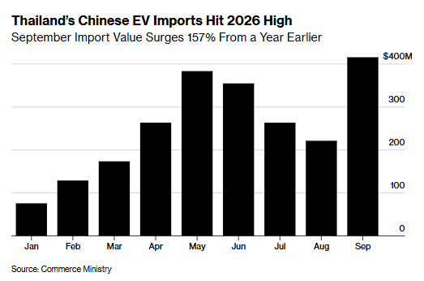
背景与关键数据
- 泰国汽车业：泰国被称为"东南亚的底特律"，日系车企在那里经营了几十年。近几年比亚迪、长城、长安、广汽埃安等中国车企在泰国建厂、卖车，抢走了不少日系份额。
- 泰国的电动车政策：此前为吸引投资，泰国对承诺本地建厂的车企给予进口关税和消费税优惠，条件是在一定期限内按进口量本地生产。新税制的方向是：本地造的车优惠，纯进口的车加税。
图片解读
- 彭博图《泰国中国电动车进口额创 2026 年新高》（2026 年 1–9 月，每月进口额，百万美元）：1 月约 7500 万，2 月约 1.25 亿，3 月约 1.7 亿，4 月约 2.6 亿，5 月约 3.8 亿，6 月约 3.55 亿，7 月约 2.6 亿，8 月约 2.2 亿，9 月约 4.1 亿美元，创年内新高，同比增长 157%。
为什么重要 / 对市场和经济的含义
- 出口是中国车企的救命稻草：国内价格战让车企利润率只有 1.4%（帖 1），海外市场利润高得多。但出口越猛，贸易保护就越多：欧盟加征反补贴税、巴西提高关税，现在泰国也要动手。
- 从"出口整车"到"本地建厂"：加税的目的就是逼车企本地生产。这会带动中国车企的海外投资，但也意味着国内工厂的订单和就业流失。
- 与帖 21 合看：电池出口退税取消、泰国对进口车加税，中国新能源产业的出口红利期在收窄。
延伸知识
- "关税跳跃"型投资：当进口关税很高时，外国企业选择到当地建厂来绕开关税。1980 年代日本车企在美国大量建厂，就是为了应对美国的"自愿出口限制"。
- 贸易保护与产业政策：发展中国家常用"高关税 + 本地化要求"培育本国制造业。泰国希望保住它的汽车制造中心地位，而不只是成为中国车的销售市场。
帖 30 · 瑞银：俄罗斯原油出口很有韧性，中国、印度、土耳其占了 77%（美西 10-28 13:47）
西方制裁没能让俄罗斯少卖多少原油，只是换了买家；但乌克兰打掉了俄罗斯的炼油厂，成品油反而紧张，推高了全球汽油价格。读全文收起
帖子原文
（要点转述）瑞银：近几个月俄罗斯开始大量进口成品油，反映乌克兰的打击对其国内炼油能力造成了破坏。作为全球最大的柴油、燃料油和石脑油出口国之一，这非常罕见，也是全球汽油价格居高不下的原因之一。相比之下，俄罗斯原油出口表现出显著韧性：尽管有欧盟禁运和七国集团价格上限，出口量仅比战前低约 10%。估计目前 61% 的俄罗斯原油由所谓"影子舰队"运出，这种做法在西方融资和保险体系之外运作，削弱了制裁和价格上限的效果。中国、印度和土耳其合计占比从 29% 飙升到 77%。#金融#
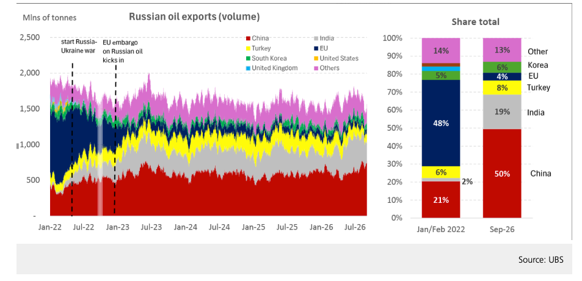
背景与关键数据
- 价格上限：七国集团规定，西方的航运和保险公司只能为低于上限价格的俄罗斯原油提供服务，目的是让俄罗斯"能卖但赚不多"。
- 影子舰队：老旧油轮、注册在小国、不用西方保险，专门运输受制裁的原油。它们绕开了价格上限，但也带来漏油等安全隐患。
- 原油 vs 成品油：原油要经过炼油厂才能变成汽油、柴油。俄罗斯炼油厂被无人机打击后，原油可以照常出口，国内的成品油却不够用了。
图片解读
- 左图《俄罗斯原油出口（量）》（2022 年 1 月至 2026 年 9 月，堆叠面积图）：
- 2022 年 2 月俄乌战争开始前，深蓝色的欧盟是最大买家；2022 年 12 月欧盟禁运生效后，欧盟份额几乎消失。
- 取而代之的是红色（中国）、灰色（印度）、黄色（土耳其）快速扩大，总量在 2023 年中基本恢复到战前水平，之后一直比较稳定。
- 右图（出口份额对比）：
- 2022 年 1–2 月：欧盟 48%、中国 21%、土耳其 6%、韩国 5%、印度 2%、其他 14%。
- 2026 年 9 月：中国 50%、印度 19%、土耳其 8%、韩国 6%、欧盟 4%、其他 13%。
- 中国、印度、土耳其合计从 29% 升到 77%。
为什么重要 / 对市场和经济的含义
- 制裁的局限：只要有大买家愿意买，制裁就很难切断贸易，只能改变价格和路线。中国、印度通过折价购买俄油，降低了自己的能源成本。
- 成品油紧张推高油价：在伊朗战争（帖 15）已经推高原油价格的同时，俄罗斯炼油能力受损让柴油、汽油更紧张，这是美国油价居高不下、通胀难降的原因之一（帖 33）。
- 地缘风险：中国成为俄油最大买家，在中美、中欧关系中是敏感点，存在被"次级制裁"的风险。
延伸知识
- 炼油价差（Crack Spread）：成品油价格减原油价格，反映炼油的利润。炼油能力受损时，成品油比原油更紧缺，炼油价差扩大。这就是为什么有时原油价格没怎么涨，加油站的价格却涨很多。
- 次级制裁：美国不仅制裁目标国，还制裁和目标国做生意的第三国企业。它的威力来自美元结算体系，被制裁的企业很难再使用美元。
帖 31 · 韩国 8 月出生人口同比增长 13%，前 8 个月累计增长 14.5%（美西 10-28 13:59）
全球生育率最低的韩国，出生人口连续回升，背后是前几年结婚潮的滞后效应。读全文收起
帖子原文
（要点转述）韩国统计局：8 月出生人口同比增加 13%，1–8 月累计同比增长 14.5%。#其他国家经济#
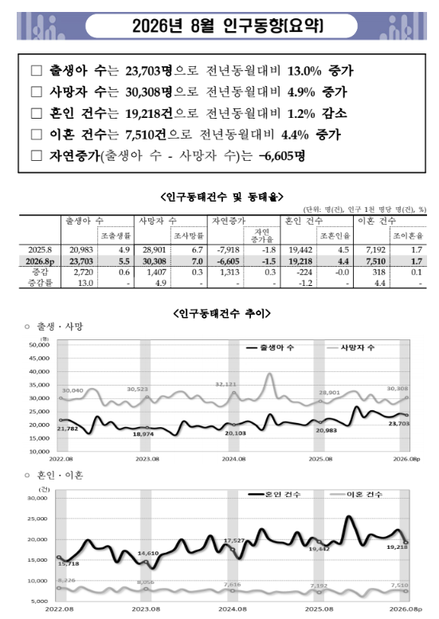
背景与关键数据
- 韩国生育率：2023 年总和生育率（一个女性一生平均生孩子的数量）只有 0.72，全球最低，之后开始回升。维持人口不减少需要约 2.1。
- 回升原因：一是疫情后积压的婚礼在 2023–2025 年集中举行，婚后一两年生育；二是 1990 年代初出生人口较多的一代进入 30 岁出头的生育高峰；三是政府加大育儿补贴、住房和育儿假支持。
图片解读
- 《2026 年 8 月人口动向（摘要）》（韩国统计局，韩文）：
- 出生 23,703 人，同比 +13.0%；死亡 30,308 人，同比 +4.9%；结婚 19,218 对，同比 -1.2%；离婚 7,510 对，同比 +4.4%；自然增长 -6,605 人（死亡多于出生）。
- 粗出生率（每千人）从 4.9 升到 5.5；粗结婚率 4.4。
- 出生与死亡趋势图（2022 年 8 月至 2026 年 8 月）：黑线出生数，2022 年 8 月 21,782、2023 年 8 月 18,974（低点）、2024 年 8 月 20,103、2025 年 8 月 20,983、2026 年 8 月 23,703，逐年走高；灰线死亡数大多在 2.8–3.2 万之间，始终高于出生数。
- 结婚与离婚趋势图：结婚数 2022 年 8 月 15,718、2023 年 8 月 14,610、2024 年 8 月 17,527、2025 年 8 月 19,442、2026 年 8 月 19,218。2024–2025 年明显上升，2025 年 8 月之后出现过一个约 2.5 万的高峰，最近开始走平。离婚数在 7,000–8,000 左右平稳。
为什么重要 / 对市场和经济的含义
- 结婚是生育的领先指标：在东亚，绝大多数孩子是婚内出生的，结婚数增长一两年后出生数跟着增长。8 月结婚数同比转为小幅下降（-1.2%），提示这波反弹可能在一两年后放缓。
- 对中国的参照：中国结婚登记数 2024 年大幅下降（约 610 万对，比 2023 年少约两成）。按同样的"结婚领先生育"逻辑，中国出生人口短期难有大的回升。
- 仍是负增长：即使出生涨了 13%，死亡仍比出生多 6600 人，韩国人口减少的大趋势没变。
延伸知识
- "结婚 → 生育"的时间差：在韩国，第一胎通常在婚后一两年出生。所以分析出生人口时，要往前看一两年的结婚数据。
- 补偿性生育：疫情、经济危机期间推迟的婚育，在危机过后集中补回来，会造成短期反弹。这种反弹不一定代表长期生育意愿改变，日本 2000 年代中期也有过短暂回升，之后继续下降。
帖 32 · 员工投诉补缴社保，连 1991 年的欠费都被追了回来（美西 10-28 16:14）
员工可以追溯几十年前公司没交的社保，社保部门照单追缴，企业的历史欠账正在被翻出来。读全文收起
帖子原文
（要点转述）员工投诉要求补缴社保，连 1991 年的欠费也被翻了出来。Jason 附了两份北京市西城区社会保险基金管理中心的公告截图。#TAX#
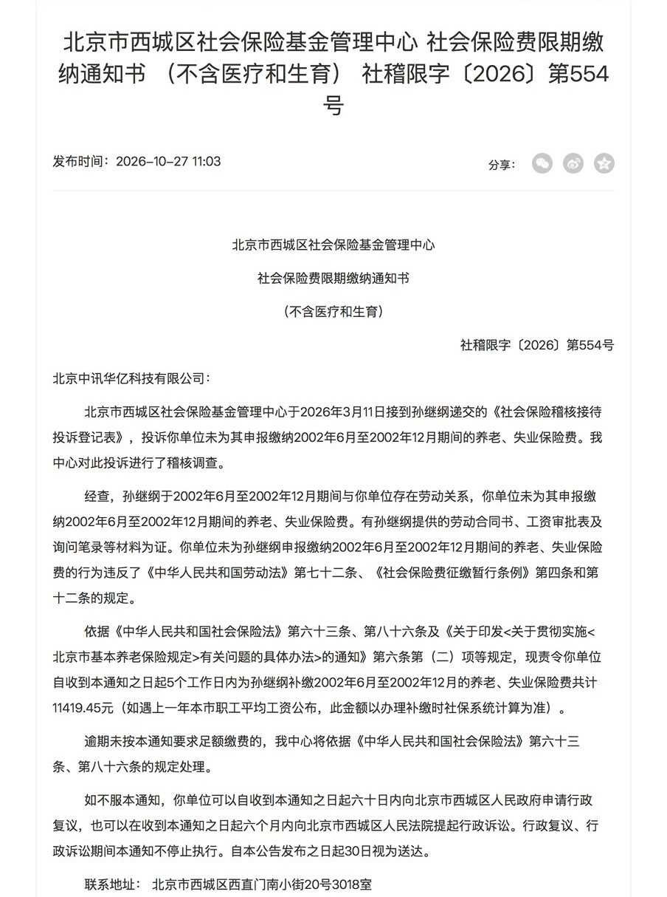
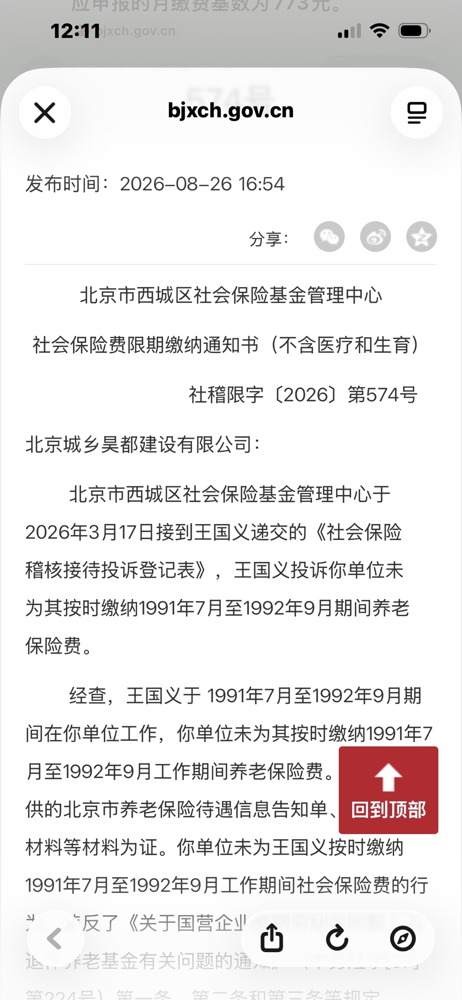
背景与关键数据
- 社保稽核：社保经办机构接到投诉后，核查企业是否足额为员工缴纳社保，发现欠缴就下达《限期缴纳通知书》，逾期不缴可以按《社会保险法》加收滞纳金、处以罚款。
- 公告送达：两份通知都是公告形式（"自公告发布之日起 30 日视为送达"），通常说明社保部门联系不上企业，企业可能已经停止经营或地址变更。
- 政策背景：2025 年 9 月 1 日起施行的最高法劳动争议司法解释（二）明确，用人单位和劳动者约定"不缴社保"无效，员工可以据此主张权利。这一规定之后，补缴社保受到的关注明显上升。
图片解读
- 图 1：社稽限字〔2026〕第 554 号（发布于 2026 年 10 月 27 日）：一名员工 2026 年 3 月 11 日投诉，原单位（一家科技公司）未为其申报缴纳 2002 年 6 月至 12 月的养老、失业保险费。经查劳动关系属实（有劳动合同、工资审批表、询问笔录为证），责令单位 5 个工作日内补缴共计 11,419.45 元；通知注明，如遇上一年度本市职工平均工资公布，金额以补缴时社保系统计算为准。不服可在 60 日内申请行政复议，或 6 个月内提起行政诉讼。
- 图 2：社稽限字〔2026〕第 574 号（发布于 2026 年 8 月 26 日，手机截图）：一名员工 2026 年 3 月 17 日投诉，原单位（一家建设公司）未为其缴纳 1991 年 7 月至 1992 年 9 月的养老保险费，提供了北京市养老保险待遇信息告知单等材料，社保中心认定企业违反了当时北京关于国营企业职工退休养老基金的规定。这就是 Jason 说的"1991 年也被翻出"，追溯了 35 年。
- 两份通知都只涉及几个月到一年多的缴费，金额不大，但追溯时间很长。
为什么重要 / 对市场和经济的含义
- 养老金缺口的"微观补丁"：员工临近退休时，发现缴费年限不够或有断档，会主动投诉补缴，以拿到更高的养老金。社保部门也有动力追缴，因为这能增加基金收入。
- 企业的历史负债：很多企业（特别是 90 年代、2000 年代的中小企业和改制国企）当年没有足额缴社保。这类追溯一旦普遍化，对企业来说是一笔意想不到的负担，已经注销或经营困难的企业则可能追不回来。
- 和财政压力的联系：Jason 打 #TAX# 标签，是把它放在"财政收入扩张"的框架里看。地方财政紧张（帖 18、20），社保基金收支压力大（帖 7 老龄化），征管会越来越严，从"税"到"费"都是如此。
延伸知识
- 社保费追缴有没有时效：劳动保障监察一般有两年的时效，但对于欠缴的社保费，实践中多地社保部门和法院认为追缴不受时效限制，因为社保费是公法上的缴纳义务，不是普通民事债务。所以几十年前的欠费仍可能被追。
- "视同缴费年限"：1990 年代养老保险制度改革前，在国有企业工作的年限可以被"视同缴费"，不用补钱也算工龄。但改革后单位应缴未缴的部分不能视同，需要补缴。这也是为什么很多临近退休的人会去翻 90 年代的档案。
帖 33 · 中金：美国 CPI 明年 5 月或回到 2%，10 年美债可能到 5.3%，黄金像一张"看涨期权"（美西 10-28 19:58）
油价冲击带来的通胀是"一次性"的，高基数会让 CPI 明年自然回落；在那之前利率还会再紧一阵，黄金现在跌下来，更像是一张需要等待时机的看涨期权。读全文收起
帖子原文
（要点转述）中金：如果油价维持现状（每桶 95 美元左右），粗略测算美国 CPI 在 2027 年 5 月将回到 2%，明显低于当前的 3.7%。虽然 10 月公布的通胀数据让加息预期"反扑"、美债利率再度走高，但如果短暂加息是基本假设，依然符合这一规律。按点阵图再加息一次测算，4%–4.25% 的基准利率加上 70–90 个基点的期限溢价，恰好对应 10 年期美债 5.3% 左右。**如果对美联储加息路径的判断准确，金融条件最紧的时刻也在逐步接近。**美国能承受多高的利率？6% 可能是分水岭。黄金当前更像"看涨期权"，有三层含义：一是要付"期权费"，即时间成本；二是下行压力可控，最大的风险是连续大幅加息；三是期权兑现需要"行权条件"即叙事，比如去年底市场对 AI 投资回报、美国政策和美联储信誉的担忧，共同催化了黄金大涨。从各类资产计入的未来一年加息预期看：利率期货（3 次）> 黄金（2.4 次）> 铜（1.9 次）> 道琼斯（1.7 次）= 美债（1.7 次）> 标普 500（1.1 次）> 点阵图（1 次）> 纳斯达克（0.4 次）。#金融#
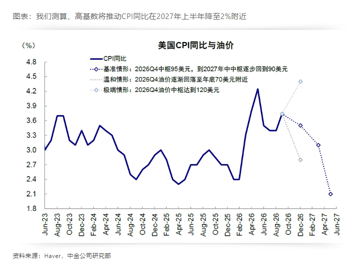
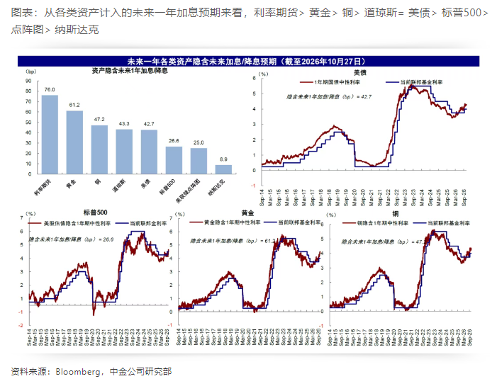
背景与关键数据
- 基数效应：同比通胀 = 今年价格 ÷ 去年同期价格 − 1。2026 年上半年油价暴涨把物价水平抬高了，到 2027 年上半年，"去年同期"已经是高价，只要油价不再继续涨，同比数字就会自然下降。
- 期限溢价：见帖 3。中金假设 70–90 个基点。
- 10 年期美债 ≈ 政策利率 + 期限溢价：4%–4.25% 加 0.7%–0.9%，简单相加是 4.7%–5.15%。中金给出的约 5.3% 应该还包含了其他假设，原文没有展开。
- "隐含加息次数"：通过各类资产价格反推，市场在为未来一年的加息定价多少。每次加息按 25 个基点算。
图片解读
- 图 1《美国 CPI 同比与油价》（2023 年 6 月至 2027 年 6 月）：
- 实线（CPI 同比）：2023 年 8 月约 3.7%，2025 年 4 月低点约 2.3%，2026 年 1–2 月约 2.4%，随后因油价暴涨在 2026 年 6 月冲到约 4.25%，之后回落到 3.4%–3.5%，最新（2026 年 9 月）约 3.7%。
- 三种情景：
- 基准情形（四季度油价中枢 95 美元，2027 年中逐步回到 90 美元）：2026 年 12 月约 3.5%，2027 年 3 月约 3.1%，2027 年 5 月约 2.1%。
- 温和情形（油价年底回落到 70 美元附近）：2026 年 12 月约 2.8%。
- 极端情形（四季度油价中枢 120 美元）：2026 年 12 月约 4.4%。
- 图 2《未来一年各类资产隐含的加息 / 降息预期》（截至 2026 年 10 月 27 日）：
- 柱状图（基点）：利率期货 76.0、黄金 61.2、铜 47.2、道琼斯 43.3、美债 42.7、标普 500 26.6、美联储点阵图 25.0、纳斯达克 8.9。除以 25 就是帖子里的"次数"。
- 四张小图（2014 年至今）：分别用美债、标普 500、黄金、铜的价格反推出"1 年期隐含中性利率"（红线），和实际联邦基金利率（蓝线）对比。红线高于蓝线，说明该资产在为加息定价。几张图的红线最近都抬头，在 4%–4.5% 附近。
为什么重要 / 对市场和经济的含义
- "最紧时刻"在接近：如果美联储再加一两次后停下，而 CPI 明年上半年快速回落，那么现在到明年一季度可能就是这轮紧缩的高点。对资产配置来说，这是"利率见顶"前的布局窗口。
- 6% 是分水岭：10 年期美债收益率如果逼近 6%，房贷利率会超过 8%，企业融资成本大增，政府利息支出压力剧增（帖 26 外国买家减少），可能引发金融市场动荡。
- 各资产定价的分歧：利率期货最鹰（3 次），纳斯达克最鸽（0.4 次）。纳斯达克几乎没有为加息定价，说明科技股估值最容易受到加息超预期的冲击；黄金已经计入了 2.4 次加息，所以中金认为它的下行空间相对有限。
延伸知识
- 看涨期权的直观理解：花一笔小钱（期权费）买一个"未来可以按约定价买入"的权利。价格涨了就行权赚钱，没涨最多亏期权费。中金的比喻是：现在持有黄金要承担利息上的机会成本（期权费），下跌空间有限，一旦出现新的"叙事"（如美联储信誉受损、财政危机），金价可能大涨。
- 为什么各资产会隐含不同的加息预期：每类资产对利率的敏感度和其他驱动因素不同。比如铜还受 AI 和电网需求影响，股票还受盈利影响，所以"反推"出的数字只是近似。但把它们放在一起，可以看出哪类资产最没有为风险做准备。
今日全图索引
| 帖号 | 时间（美西） | 主题 | 标签 | 图片文件名 |
|---|---|---|---|---|
| 帖 1 | 10-27 01:01 | 崔东树：汽车销售利润率 1.4%，单车毛利 vs 税费 | #经济数据# | post1_img1.png、post1_img2.png |
| 帖 2 | 10-27 11:49 | 国金：分析师下调全 A 盈利预测，ETF 个人与机构分化 | #A股# | post2_img1.png、post2_img2.png |
| 帖 3 | 10-27 12:44 | 花旗：AI 资本开支 + 政府发债推高长端利率 | #金融# | post3_img1.png |
| 帖 4 | 10-27 13:16 | 摩根大通：H 股银行股息溢价回到 10 年均值 | #金融# | post4_img1.png |
| 帖 5 | 10-27 13:27 | 摩根士丹利：50 城新房周销量约 2 万套 | #房价# | post5_img1.png |
| 帖 6 | 10-27 13:40 | 摩根大通：9 月工业利润 +14.4% 与 PPI | #经济数据# | post6_img1.png |
| 帖 7 | 10-27 13:59 | 花旗：中国人口老龄化与"年轻老人" | #人口# | post7_img1.png |
| 帖 8 | 10-27 14:10 | 高盛：高科技占产出 38%、就业仅 11% | #经济数据# | post8_img1.png |
| 帖 9 | 10-27 14:39 | 美银：防御板块接近泡沫区，金融压力指标 | #美股# | post9_img1.png、post9_img2.png |
| 帖 10 | 10-27 15:03 | 摩根大通：中国家庭买金热，上金所成交回升 | #金融# | post10_img1.jpg |
| 帖 11 | 10-27 15:19 | 摩根大通：泡泡玛特三季度收入 -47%，低配 | #经济数据# | post11_img1.png、post11_img2.png |
| 帖 12 | 10-27 15:31 | 摩根大通：一线城市二手挂牌价继续阴跌 | #房价# | post12_img1.png |
| 帖 13 | 10-27 16:06 | 广发：剔除两条强势链，其余工业利润 -10.3% | #经济数据# | post13_img1.png、post13_img2.png |
| 帖 14 | 10-27 17:29 | 彭博：荷兰拟用 AI 削减 15% 公务员 | #TAX# | post14_img1.png |
| 帖 15 | 10-27 17:36 | 克鲁格曼：油价每年多花美国人 5600 亿美元 | #其他国家经济# | post15_img1.png |
| 帖 16 | 10-27 17:51 | 八卦：一则买凶新闻 | #八卦# | （无图） |
| 帖 17 | 10-28 11:39 | 国信达 + 自制图：13 城二手挂牌价跌幅 | #房价# | post17_img1.png |
| 帖 18 | 10-28 11:48 | 中证鹏元：城投补贴是净利润的 2.19 倍 | #TAX# | post18_img1.png、post18_img2.png、post18_img3.png |
| 帖 19 | 10-28 11:56 | 花旗：星宇股份三季度净利 -40% | #A股# | post19_img1.png |
| 帖 20 | 10-28 12:01 | 联合资信：2026 上半年城投债务仍在增长 | #TAX# | post20_img1.png、post20_img2.png |
| 帖 21 | 10-28 12:04 | 花旗：动力电池排产走弱，出口退税将取消 | #经济数据# | post21_img1.png |
| 帖 22 | 10-28 12:09 | 汇丰：商场分化，奢侈品复苏无期 | #经济数据# | post22_img1.png |
| 帖 23 | 10-28 12:12 | 国泰海通：三季度银行理财增 1.71 万亿 | #金融# | post23_img1.png |
| 帖 24 | 10-28 12:17 | 伍戈：低物价、老龄化下的红利资产 | #A股# | post24_img1.png、post24_img2.png、post24_img3.png |
| 帖 25 | 10-28 12:23 | 新西兰央行意外暂停加息，三家机构观点 | #金融# | post25_img1.png |
| 帖 26 | 10-28 13:20 | 彭博：美国盟友前 8 个月少买六成美债 | #金融# | post26_img1.png |
| 帖 27 | 10-28 13:24 | 彭博：AI 撑增长，美国消费者信心低迷 | #其他国家经济# | post27_img1.png、post27_img2.png、post27_img3.png、post27_img4.png |
| 帖 28 | 10-28 13:34 | 彭博：FOMC 10 比 2 按兵不动 | #金融# | post28_img1.png、post28_img2.png |
| 帖 29 | 10-28 13:42 | 彭博：泰国拟对进口电动车征 30% 消费税 | #政策分析# | post29_img1.png |
| 帖 30 | 10-28 13:47 | 瑞银：俄油出口买家变迁，中印土占 77% | #金融# | post30_img1.png |
| 帖 31 | 10-28 13:59 | 韩国 8 月出生人口 +13% | #其他国家经济# | post31_img1.png |
| 帖 32 | 10-28 16:14 | 员工投诉补缴社保，追溯到 1991 年 | #TAX# | post32_img1.jpg、post32_img2.jpg |
| 帖 33 | 10-28 19:58 | 中金：CPI 基数回落、10 年美债 5.3%、黄金如看涨期权 | #金融# | post33_img1.png、post33_img2.png |